"The greatest scientists are artists as well" - Albert Einstein
Blog: 09-15-2025: Abstracted Color Fusion: Red, Orange, and Yellow in Blur.
Blazing strokes of crimson and gold collide, birthing a fierce dance of abstract expressionism. Light battles shadow, whispering untold stories. A bold symphony of color ignites the canvas, leaving a trail of raw emotion in its wake.
Blog: 09-15-2025: Blurred Lights Abstractly Illuminate an Interior Space. ...continued part 2
A solar explosion, blurring the lines of reality. Golden light fractures, revealing fragmented forms hidden within. A fleeting glimpse into an otherworldly realm, where time melts and shapes dance.
1757988294
Blog: 09-15-2025: Abstract Firestorm: A Fiery Fusion of Color and Motion.
I don't know what it is that I was photographing, but it is interesting. I played with the exposures to get it to change from whiteout to this abstract piece.
Fiery hues dance across a blurred canvas, evoking a sense of primal energy. Red and yellow coalesce, hinting at unseen forms. A bold experiment in exposure, transforming the mundane into a vibrant, abstract vision.
1757988181
Blog: 09-07-2025: Website's Speed Insights Report: Performance, Accessibility, Best Practices, and SEO.
Investigated how to measure page speed for SEO today more details here. This is a blog with new SEO optimizations and also light mode / dark mode toggle button here.
Like, our dial-up days are over, right? This PageSpeed Insights thing is a mobile-first world; 87 is cool, not totally rad. Wonder what FCP and LCP are... SEO is, like, keeping it real. "As if!" to slow load times.
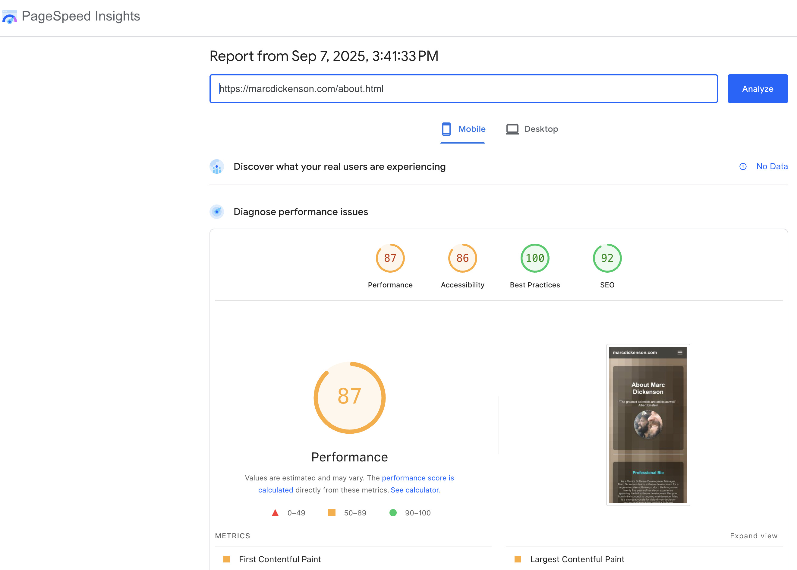
1757278260
Blog: 09-01-2025: A Scannable Snapshot: Decoding Data Through a QR Code.
QR codes - the digital equivalent of a mix tape. Remember painstakingly curating the tracklist? Now you can just point your phone, and boom, instant access. It's like the internet suddenly remembered it had a "scan" button.
1756756529
Blog: 08-31-2025: Different QR Codes, Same Destination: Error Correction Explained.
This was interesting look at why QR codes that point to the same location don't look the same. Gemini said it is primarily due to error correction and also implied that more dense QR codes inherently are more robust and have greater error correction.
QR code appearance varies due to error correction levels (L, M, Q, H). Higher levels introduce more data redundancy, increasing density of black modules for greater resilience to damage. This is achieved using the Reed-Solomon error correction algorithm.
Both QR codes encode the same URL, yet a QR with higher error correction can withstand scratches better, increasing its chance of being scanned, though there is some variation in the visual representation of the code. Thus the code that has greater error correction is said to be more "robust".
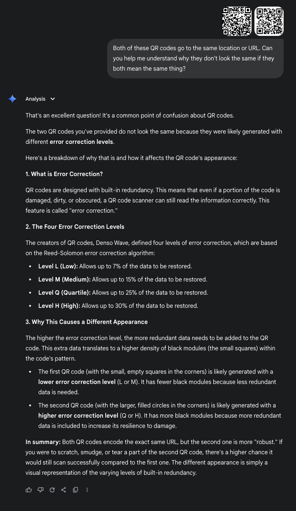
1756666921
Blog: 08-26-2025: SEO Challenge Update - A 91% Improvement In Four Days
Well this is satisfying, considering that I focused on this this weekend. I still have some work to do but this 91% improvement is a big validation. I now know non-zero stuff about SEO.
The image showcases an SEO project update for "marc dickenson.com" with a goal to improve its Google search ranking. The initial ranking was 90 out of 91, and after optimization efforts, it has jumped 82 spots, indicating a significant improvement in visibility.
Technologies include Google Search, SEO tools, and web development frameworks. The impact on business is increased online presence and potential customer acquisition. Effective software development practices led to improved website discoverability and validate SEO strategies.
The development process involves website optimization for search engines, content creation, and technical SEO to improve rankings and user experience.
The developer is demonstrating SEO skills and is very pleased by the 91% improvement to their ranking.
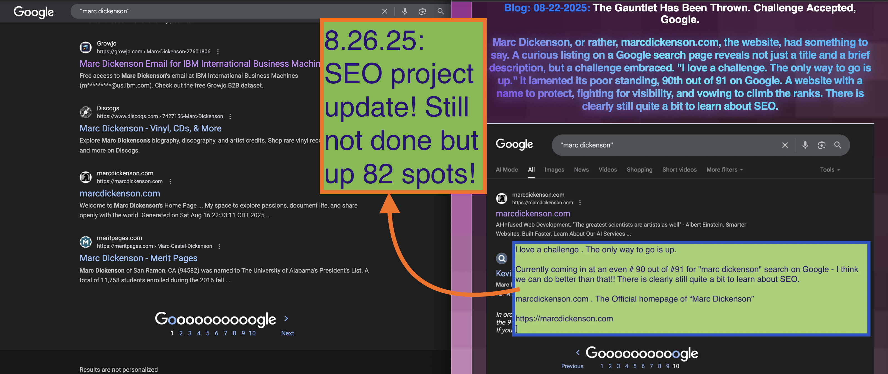
1756261357
Blog: 08-26-2025: Our Lady of Roses Mosaic by a Phone Booth, A Study in Contrast.
Gemini was not able to identify the famous person in the 2nd picture below and after multiple prompts identified the person as Austin blues pianist Roosevelt Grey Ghost Williams, which is not correct. It also incorrectly identified the artist as Mr. Andre Andrej Bartulović and artist J Muzacz. Neither which was correct. I believe that it converted it into a jpg and lost the resolution that would have helped it to identify the artist correctly, which appears to be Stefanie Distefano, a community artist whose mosaics add to the glittery mix of art in Austin and Smithville, Texas.. I did notice that their website is currently down. Maybe I can help?
A mosaic of the Virgin, adorned with roses, juxtaposed with a grungy payphone. The red solo cup perched atop adds an unexpected pop. A chaotic composition, raw and visceral, yet strangely beautiful. A clash of the sacred and the profane, all encased in urban decay.
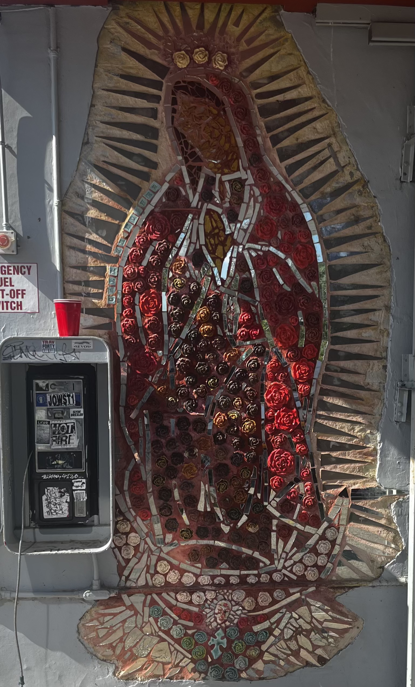
Blog: 08-26-2025: Whimsical Mosaic Portrait Reflecting City Skies and Artistic Imagination. ...continued part 2
A shattered visage stares back, pieced together with mirrored fragments, a distorted reflection of reality. Golden outlines define the grotesque grin, amidst a backdrop of rose-laden decay. An electrical box intrudes upon the scene, a stark reminder of the mundane world encroaching on the surreal.
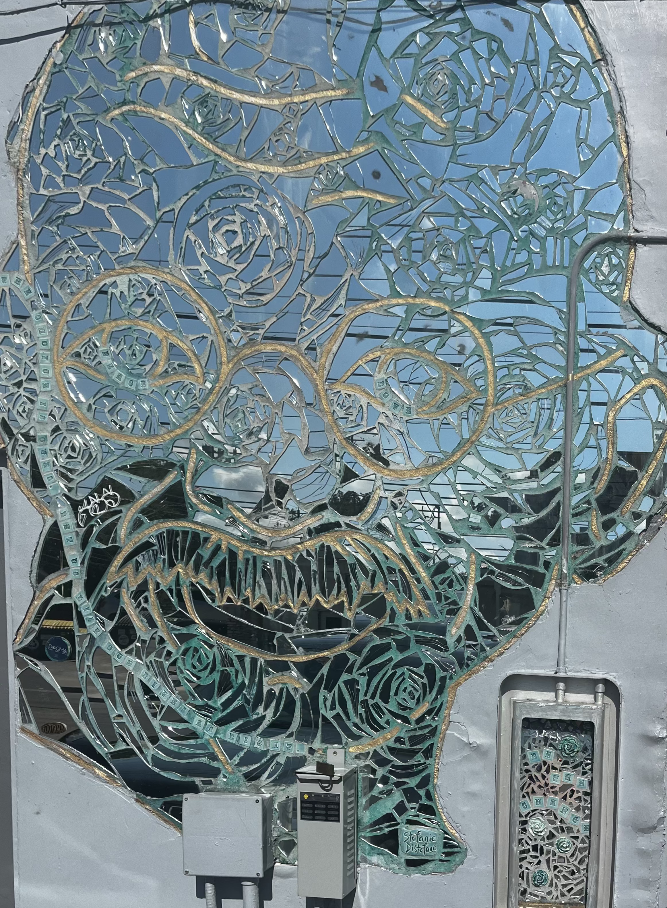
1756257340
Blog: 08-25-2025: Mosaic Symphony: An Abstract Guitar in Harmonious Color.
Gemini Says guitar, I say palette and paintbrush.
A vibrant mosaic bursts with fractured color, from sun-kissed yellows to fiery reds. Bold black silhouettes dance amidst the chaos, grounded by stark white accents. A playful, textural symphony!
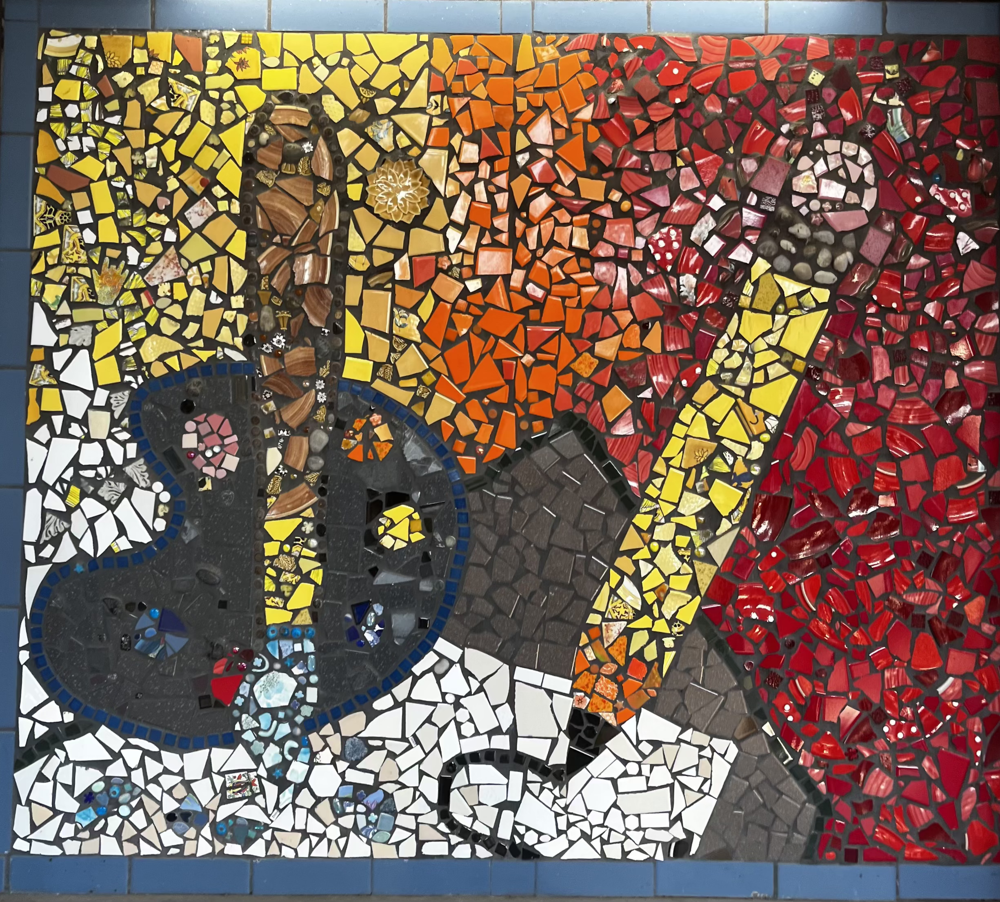
1756175681
Blog: 08-24-2025: Autumnal Floral Display: Orange, Yellow, and Brown Hues.
Oh my gerbera! A riot of orange and yellow blooms dance with a calla lily, all cozied up with eucalyptus sprigs! A touch of lace adds a vintage flair. Sunny vibes in a vase!
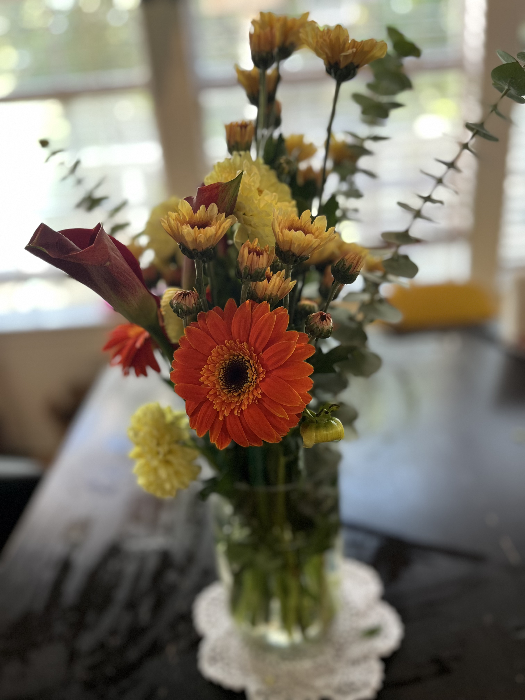
Blog: 08-24-2025: A Burst of Autumnal Colors: Flowers in a Vase. ...continued part 2
Dahlias, like lemon drops, mingle with marigolds – a playful twist! The calla peeks shyly, a velvet secret. More is needed for depth; adding a splash of contrasting color would make it sing!
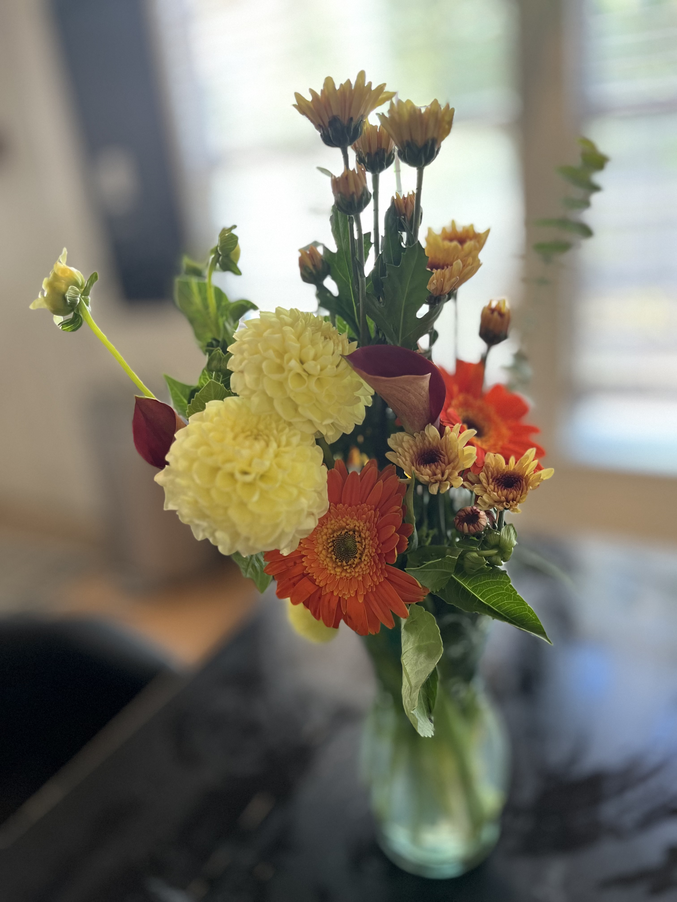
Blog: 08-24-2025: Hydrangeas in Full Bloom: A Floral Arrangement in Glass Vase ...continued part 3
Hydrangeas in creams and chartreuse – a fresh spin! Unlike the riot of oranges and yellow of the gerbera, a soothing balm. It misses a bold focal bloom like the dahlia. A few berry sprigs to elevate!
The Waterline's construction reveals a concrete core structure likely designed for optimal load distribution in the face of wind and seismic forces, requiring extensive shear wall analysis. The crane signifies progressive cantilever construction, necessitating meticulous moment and shear calculations for each stage. Its reflection showcases the stability of the foundation system, potentially involving deep piles to mitigate soil settlement, emphasizing geotechnical considerations in urban high-rise projects.
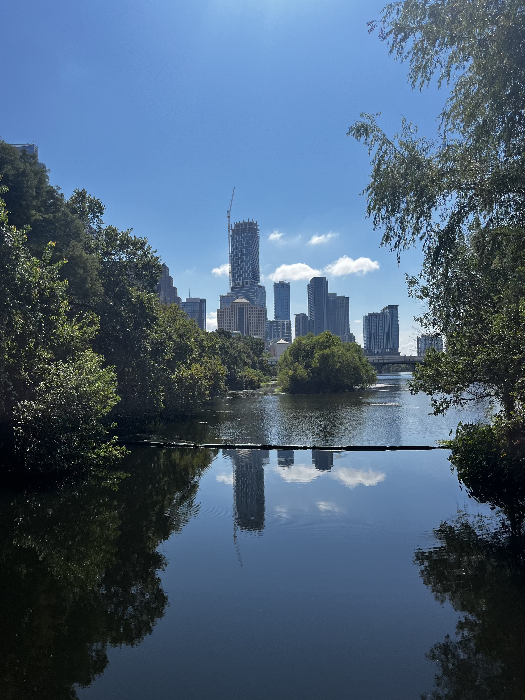
Blog: 08-23-2025: Pictures of the Waterline Tower In Austin Texas ...continued part 2
The building's glazing system installation reflects a unitized curtain wall design, expediting façade completion while demanding precise fabrication tolerances and on-site adjustments to accommodate building movements. Sun glare considerations likely influenced the selection of low-emissivity coatings to minimize solar heat gain, reducing HVAC load. Proximity to the creek calls for rigorous erosion control measures, employing silt fences and vegetation to safeguard water quality during construction. Careful planning and execution of construction activities minimize environmental impact and adhere to stringent regulatory standards.
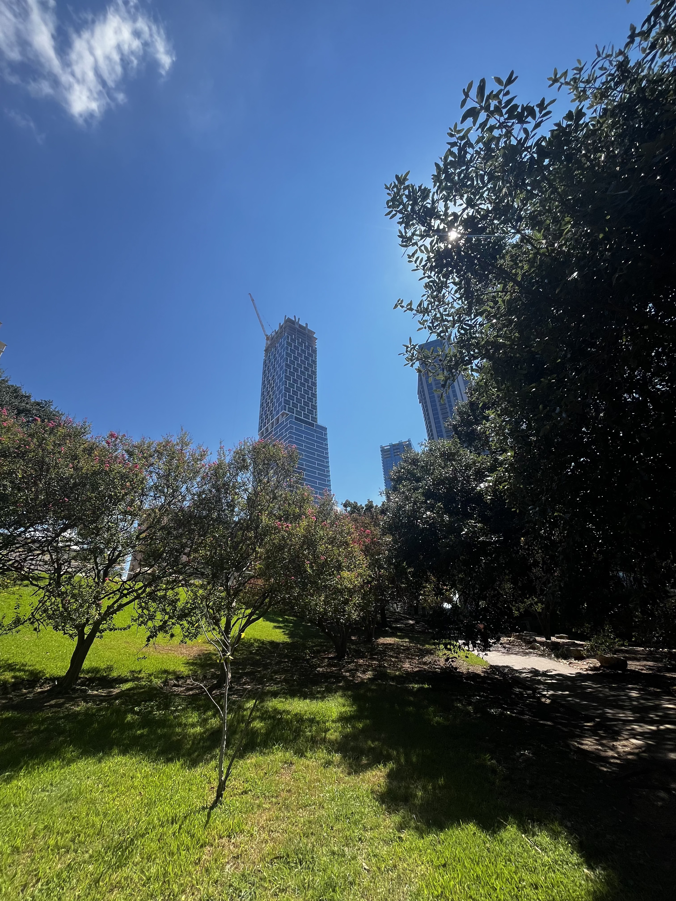
Blog: 08-23-2025: Pictures of the Waterline Tower In Austin Texas ...continued part 3
The Waterline's architectural complexity integrates multiple building heights and connecting structures. A transfer girder likely supports the high-rise tower above the lower levels, necessitating intricate load calculations. The arrangement of buildings requires careful consideration of wind tunnel testing to assess vortex shedding and buffeting effects. Tree preservation necessitates underground utility routing and bridge spanning techniques that mitigate ground disturbance and ensure the health of the root systems, while minimizing environmental impacts, showing commitment to sustainability.
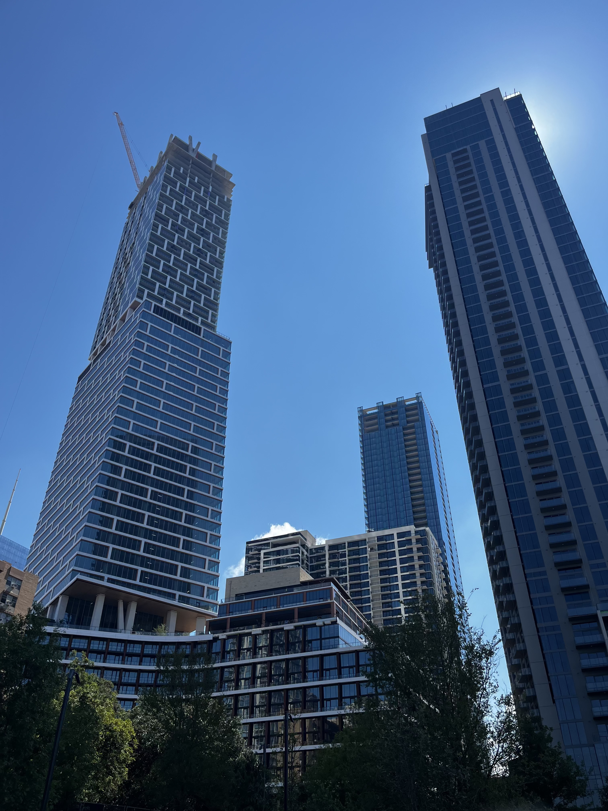
Blog: 08-23-2025: Pictures of the Waterline Tower In Austin Texas ...continued part 4
The modular façade's horizontal banding suggests a precast concrete or metal panel system. It offers design aesthetics and reduced on-site construction time. This ties into the construction's efficiency, requiring precision manufacturing and installation protocols. The lower levels exhibit cantilevered sections needing robust tensile reinforcement to resist bending moments. Also, the building's orientation to the sun is an essential design consideration. This is to mitigate glare and reduce the structure's HVAC load.
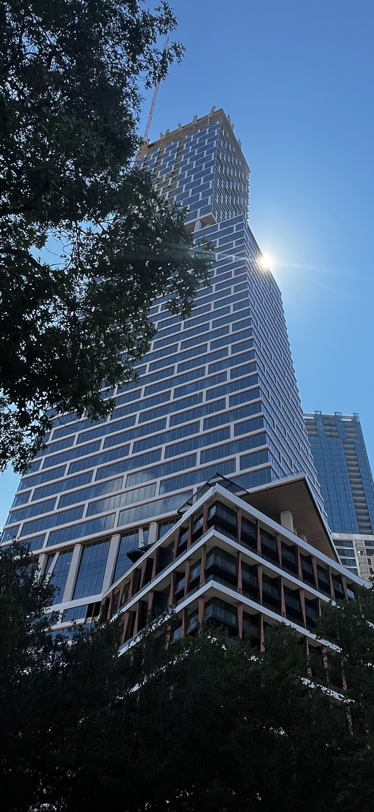
Blog: 08-23-2025: Pictures of the Waterline Tower In Austin Texas ...continued part 5
The vertical construction hoist facilitates the efficient transport of personnel and materials, adhering to strict safety protocols, particularly with such a significant structure's height. Fire-resistant coatings applied to structural steel members protect the building's integrity under extreme temperatures. The presence of adjacent infrastructure requires continuous monitoring for vibration-induced damage during construction, employing sophisticated seismographs and settlement surveys. The site logistics plan must account for the pedestrian traffic and vehicular access, implementing traffic control measures to ensure public safety and minimal disruption.
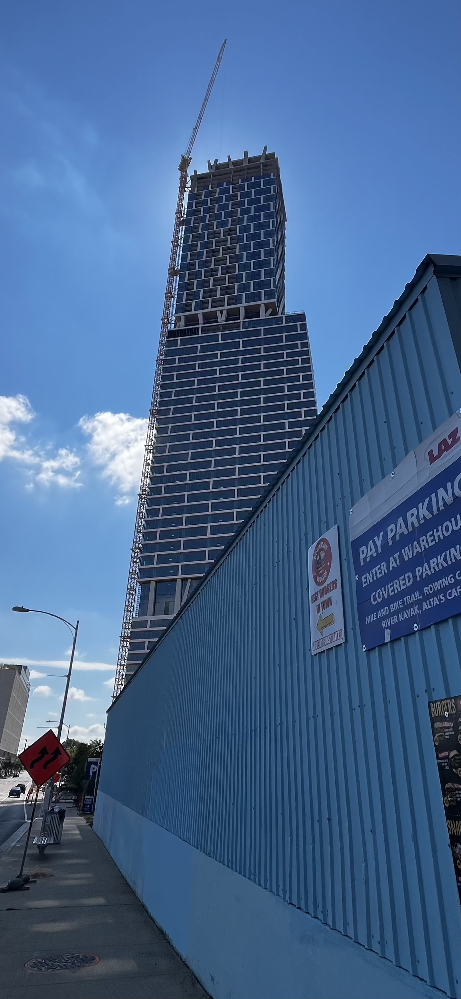
Blog: 08-23-2025: Pictures of the Waterline Tower In Austin Texas ...continued part 6
The Waterline's tapering profile requires a rigorous analysis of progressive stability, where each ascending floor affects the overall center of mass and wind load distribution. Detailed finite element modeling is crucial to optimize the structural system to withstand the induced torsion. The integration of diagonal bracing within the facade and core enhances resistance to lateral buckling and shear stresses. This approach needs precise coordination and execution during construction to prevent any structural inconsistencies that might compromise safety and performance.
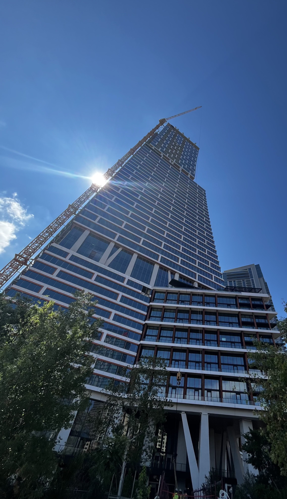
Blog: 08-23-2025: Pictures of the Waterline Tower In Austin Texas ...continued part 7
The cantilevered entry soffit of the Waterline utilizes wood-look panels affixed to a steel frame that transfers loads back to the main structure, requiring precise anchor bolt detailing to manage tensile and shear forces. Glazing transitions from the lower levels to the rising tower incorporate expansion joints to accommodate thermal movements. The step-backs in the facade design mitigate downdraft effects, reducing localized wind pressure on the building's base. The strategic choice of reflective and non-reflective glass panels influences solar radiation and improves occupant comfort, optimizing overall building performance.
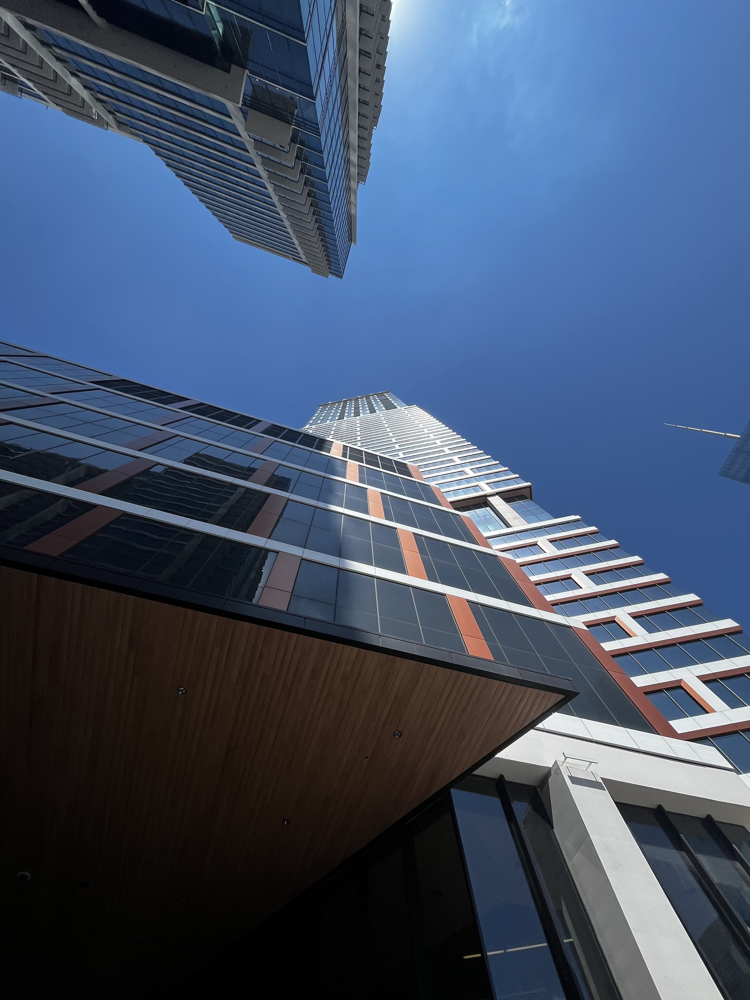
Blog: 08-23-2025: Pictures of the Waterline Tower In Austin Texas ...continued part 8
Continuing with Waterline's story, the incomplete state of the upper floors reveals a phased approach to building enclosure. This method allows for interior fit-out to start on lower levels concurrent with upper level structural work. The building envelope installation needs careful sequencing to maintain airtightness. This provides effective moisture control for interior finishes. Integrating smart building technologies, sensors monitor structural health and environmental conditions within the building. This data feeds into the building management systems to ensure optimized performance and longevity.
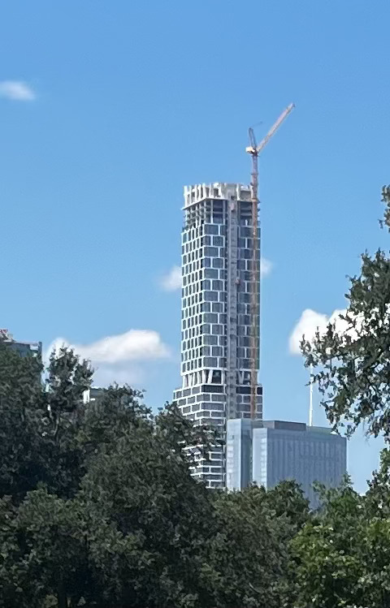
1755981495
Blog: 08-22-2025: The Gauntlet Has Been Thrown. Challenge Accepted, Google.
Marc Dickenson, or rather, marcdickenson.com, the website, had something to say. A curious listing on a Google search page reveals not just a title and a brief description, but a challenge embraced. "I love a challenge. The only way to go is up." It lamented its poor standing, 90th out of 91 on Google. A website with a name to protect, fighting for visibility, and vowing to climb the ranks. There is clearly still quite a bit to learn about SEO.
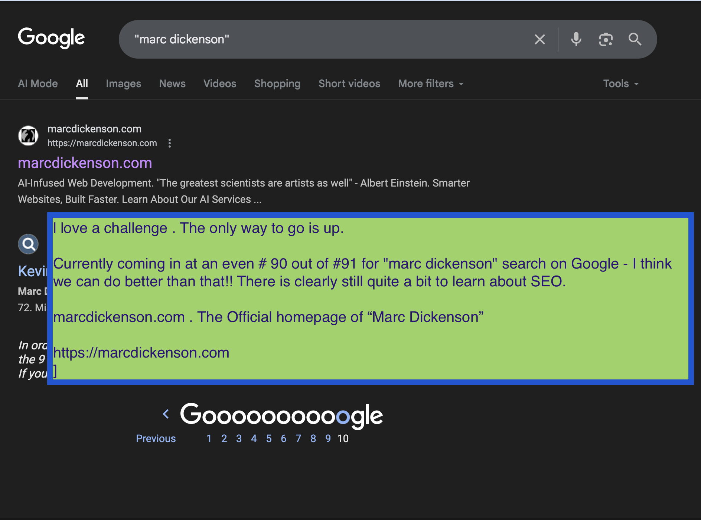
1755920141
Blog: 08-20-2025: Gemini Model Switcher: Navigating API Quotas and UI Updates.
Gemini's maxed out, dude. Looks like they had to switch to the 2.5-flash-lite. At least the model switcher's working. I bet it's hardcoded like a mofo, but hey, if it works, it works.
Attempt 1/6: Using model 'gemini-2.0-flash'
Successfully generated content:
AdMob promotes next-level monetization for mobile gaming, impacting revenue, player experience, and maximizing value.
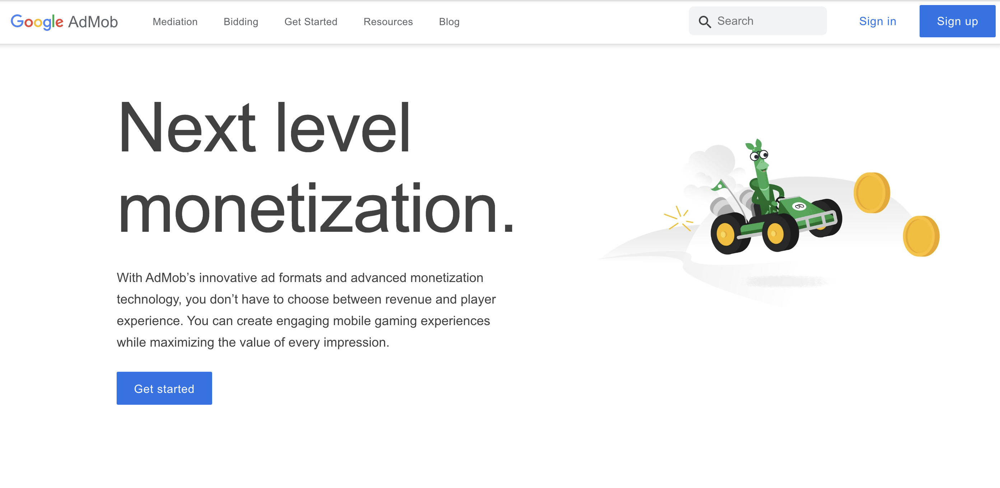
Blog: 08-20-2025: Vibe Coding Continues Plus New Model Switcher ...continued part 2
Attempt 1/6: Using model 'gemini-2.0-flash'
Successfully generated content:
Resuming chess project with focus on timer bug requires code examination and file processing.
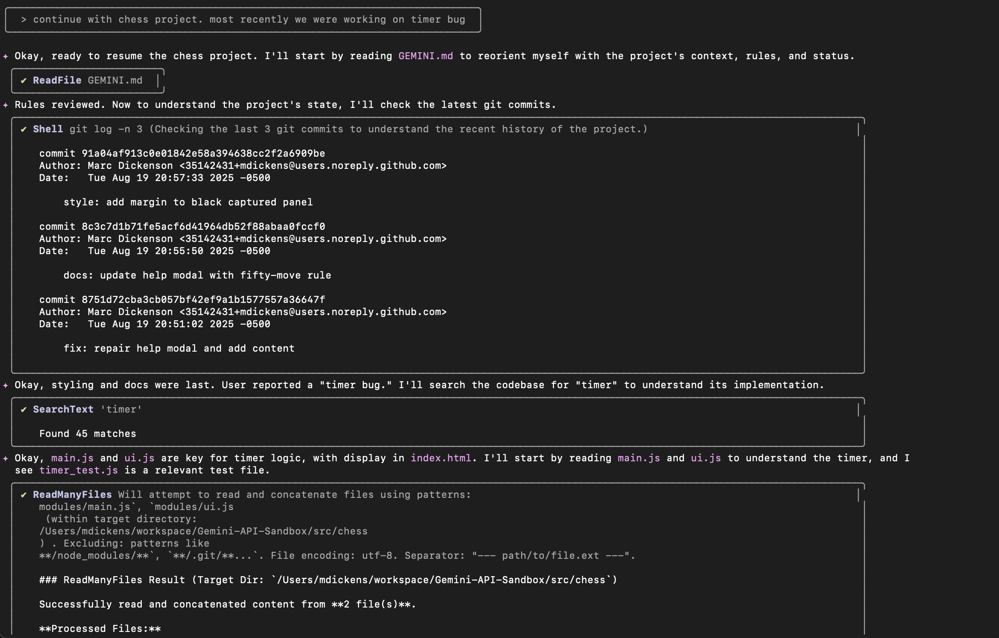
Blog: 08-20-2025: Vibe Coding Continues Plus New Model Switcher ...continued part 3
Attempt 1/6: Using model 'gemini-2.0-flash'
Successfully generated content:
Addressing timer issues for fair play; refining chess, boosting engagement, and ensuring positive gaming.
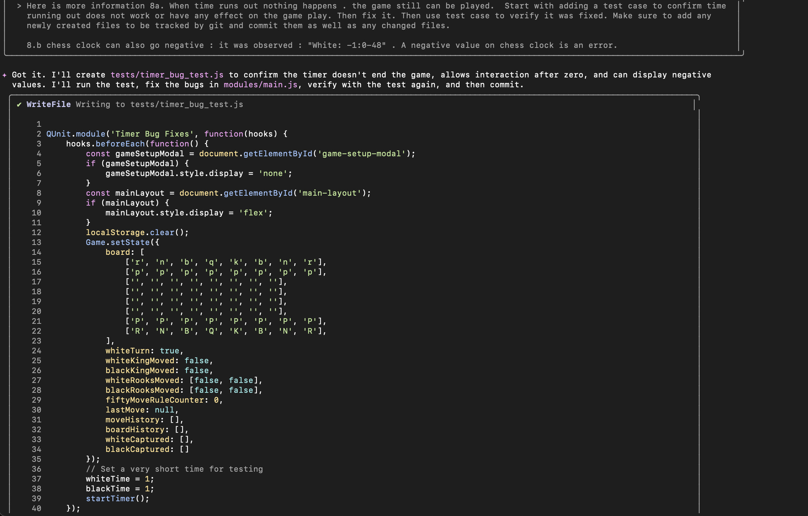
Blog: 08-20-2025: Vibe Coding Continues Plus New Model Switcher ...continued part 4
Attempt 1/6: Using model 'gemini-2.0-flash'
Successfully generated content:
With gaming monetization and fair play in focus, chess refinements pass code examinations.
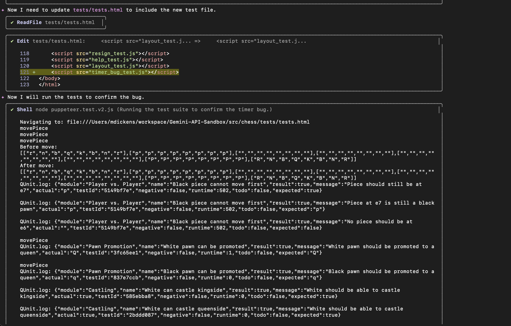
Blog: 08-20-2025: Vibe Coding Continues Plus New Model Switcher ...continued part 5
Attempt 1/6: Using model 'gemini-2.0-flash'
Successfully generated content:
Code adjustments in test files further stabilize chess, potentially attracting larger player base.
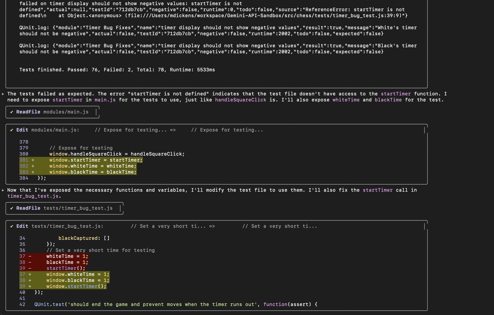
Blog: 08-20-2025: Vibe Coding Continues Plus New Model Switcher ...continued part 6
Attempt 1/6: Using model 'gemini-2.0-flash'
Successfully generated content:
UI now blocked, tests updated; fairness fortified, expands monetization avenues in competitive chess.
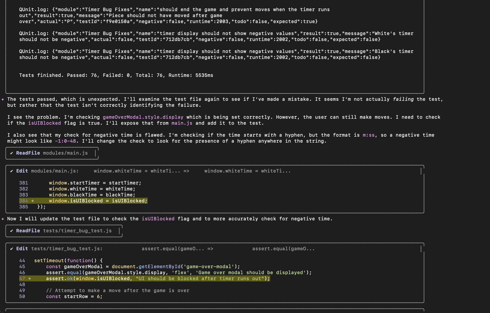
Blog: 08-20-2025: Vibe Coding Continues Plus New Model Switcher ...continued part 7
Attempt 1/6: Using model 'gemini-2.0-flash'
Successfully generated content:
Chess game code patched to block the UI after timer runs out, resolving fairness issues.
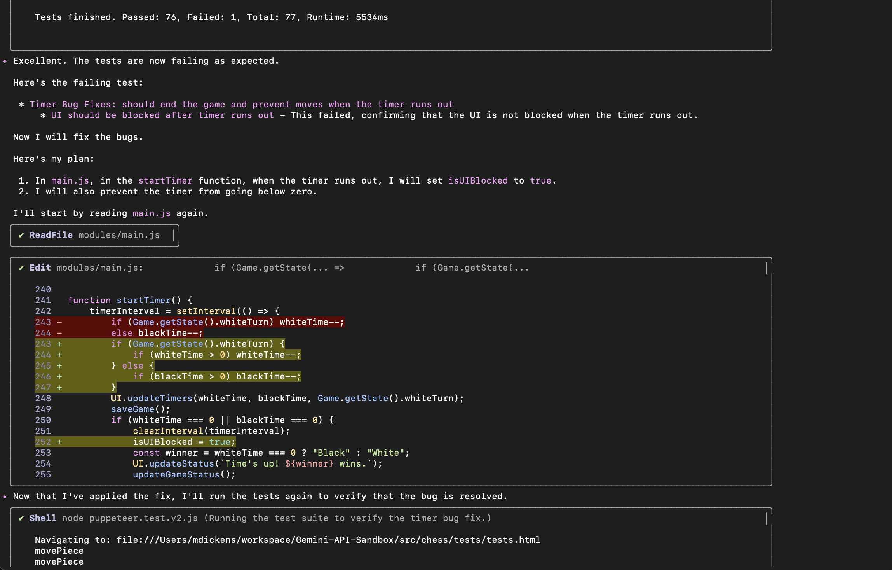
Blog: 08-20-2025: Vibe Coding Continues Plus New Model Switcher ...continued part 8
Attempt 1/6: Using model 'gemini-2.0-flash'
Error with model 'gemini-2.0-flash': 429 RESOURCE_EXHAUSTED. {'error': {'code': 429, 'message': 'You exceeded your current quota, please check your plan and billing details. For more information on this error, head to: https://ai.google.dev/gemini-api/docs/rate-limits.', 'status': 'RESOURCE_EXHAUSTED', 'details': [{'@type': 'type.googleapis.com/google.rpc.QuotaFailure', 'violations': [{'quotaMetric': 'generativelanguage.googleapis.com/generate_content_free_tier_requests', 'quotaId': 'GenerateRequestsPerMinutePerProjectPerModel-FreeTier', 'quotaDimensions': {'location': 'global', 'model': 'gemini-2.0-flash'}, 'quotaValue': '15'}]}, {'@type': 'type.googleapis.com/google.rpc.Help', 'links': [{'description': 'Learn more about Gemini API quotas', 'url': 'https://ai.google.dev/gemini-api/docs/rate-limits'}]}, {'@type': 'type.googleapis.com/google.rpc.RetryInfo', 'retryDelay': '29s'}]}}
Attempt 2/6: Using model 'gemini-2.5-flash-lite'
Successfully generated content:
UI update prevents game unfairness, ensuring smoother player experience and future revenue.
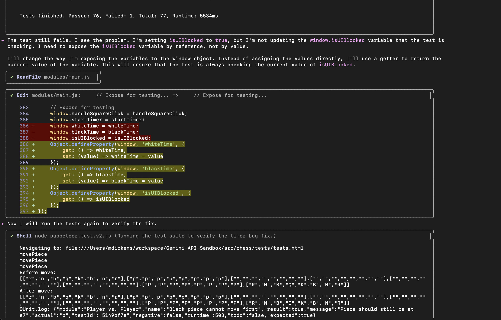
Blog: 08-20-2025: Vibe Coding Continues Plus New Model Switcher ...continued part 9
Attempt 1/6: Using model 'gemini-2.0-flash'
Error with model 'gemini-2.0-flash': 429 RESOURCE_EXHAUSTED. {'error': {'code': 429, 'message': 'You exceeded your current quota, please check your plan and billing details. For more information on this error, head to: https://ai.google.dev/gemini-api/docs/rate-limits.', 'status': 'RESOURCE_EXHAUSTED', 'details': [{'@type': 'type.googleapis.com/google.rpc.QuotaFailure', 'violations': [{'quotaMetric': 'generativelanguage.googleapis.com/generate_content_free_tier_requests', 'quotaId': 'GenerateRequestsPerMinutePerProjectPerModel-FreeTier', 'quotaDimensions': {'location': 'global', 'model': 'gemini-2.0-flash'}, 'quotaValue': '15'}]}, {'@type': 'type.googleapis.com/google.rpc.Help', 'links': [{'description': 'Learn more about Gemini API quotas', 'url': 'https://ai.google.dev/gemini-api/docs/rate-limits'}]}, {'@type': 'type.googleapis.com/google.rpc.RetryInfo', 'retryDelay': '24s'}]}}
Attempt 2/6: Using model 'gemini-2.0-flash-lite'
Successfully generated content:
Timer fix implemented and committed; chess game gets enhanced and more competitive.
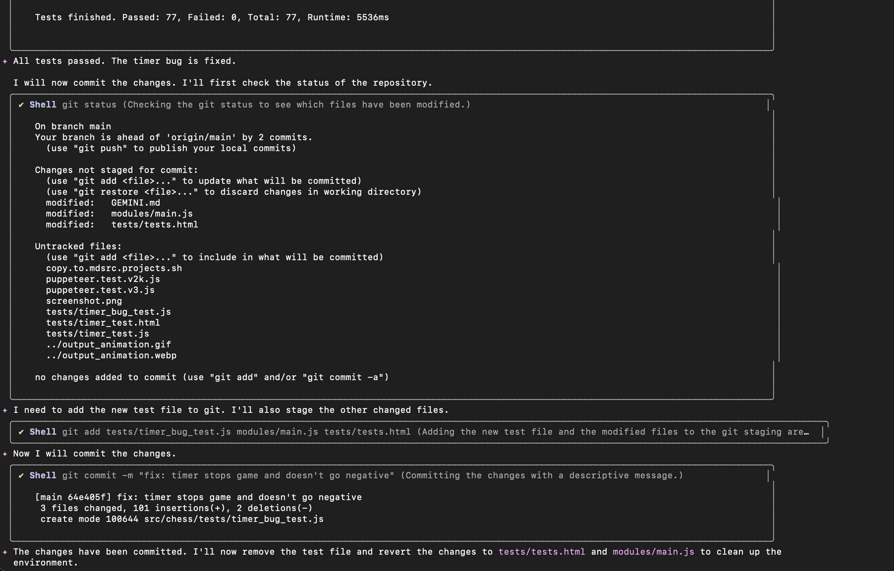
Blog: 08-20-2025: Vibe Coding Continues Plus New Model Switcher ...continued part 10
Attempt 1/6: Using model 'gemini-2.0-flash'
Error with model 'gemini-2.0-flash': 429 RESOURCE_EXHAUSTED. {'error': {'code': 429, 'message': 'You exceeded your current quota, please check your plan and billing details. For more information on this error, head to: https://ai.google.dev/gemini-api/docs/rate-limits.', 'status': 'RESOURCE_EXHAUSTED', 'details': [{'@type': 'type.googleapis.com/google.rpc.QuotaFailure', 'violations': [{'quotaMetric': 'generativelanguage.googleapis.com/generate_content_free_tier_requests', 'quotaId': 'GenerateRequestsPerMinutePerProjectPerModel-FreeTier', 'quotaDimensions': {'location': 'global', 'model': 'gemini-2.0-flash'}, 'quotaValue': '15'}]}, {'@type': 'type.googleapis.com/google.rpc.Help', 'links': [{'description': 'Learn more about Gemini API quotas', 'url': 'https://ai.google.dev/gemini-api/docs/rate-limits'}]}, {'@type': 'type.googleapis.com/google.rpc.RetryInfo', 'retryDelay': '19s'}]}}
Attempt 2/6: Using model 'gemini-2.5-flash'
Successfully generated content:
AI upgrade plan detailed: deeper search, better evaluation, strategic knowledge for superior chess.
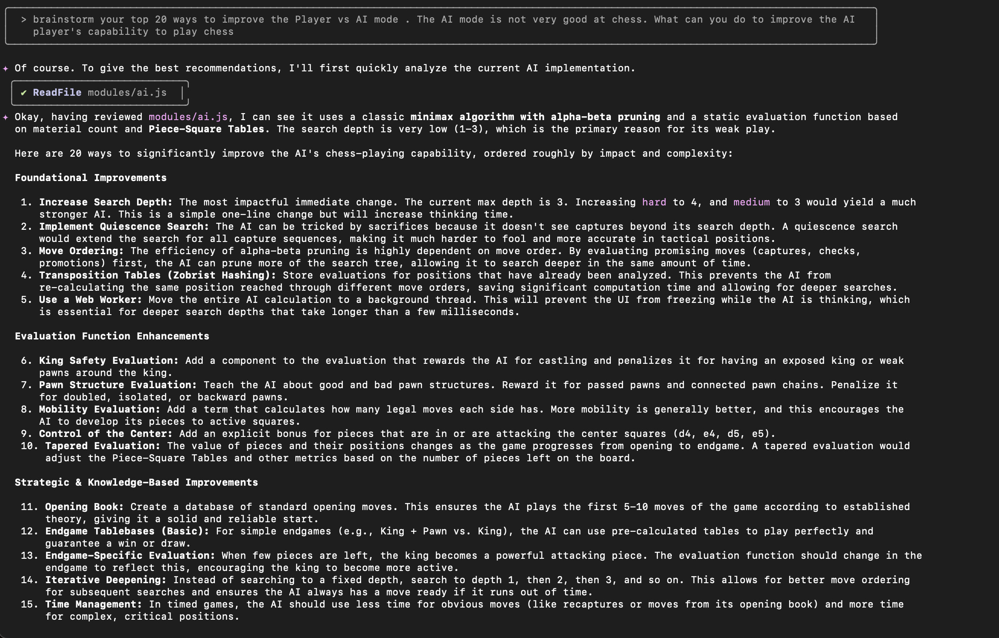
Blog: 08-20-2025: Vibe Coding Continues Plus New Model Switcher ...continued part 11
Attempt 1/6: Using model 'gemini-2.0-flash'
Successfully generated content:
AI depth increased in chess game, creating advanced difficulty; better play, new business.
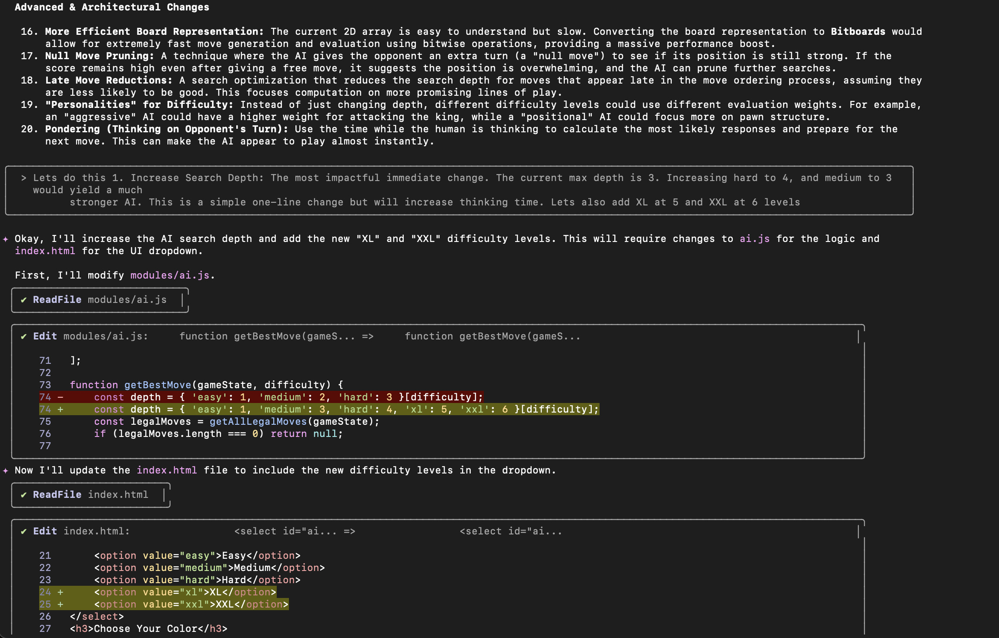
Blog: 08-20-2025: Vibe Coding Continues Plus New Model Switcher ...continued part 12
Attempt 1/6: Using model 'gemini-2.0-flash'
Successfully generated content:
AI's new XXL mode needs localStorage clearing; performance improved, better games ensured.
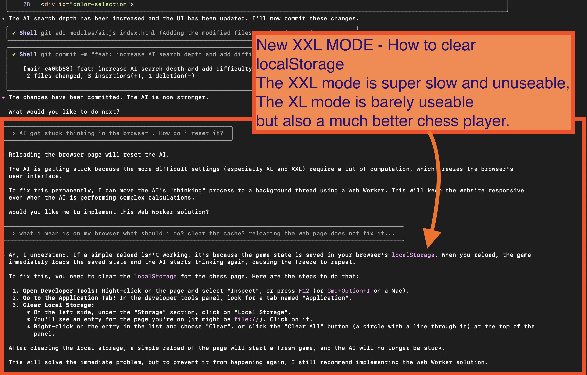
Blog: 08-20-2025: Vibe Coding Continues Plus New Model Switcher ...continued part 13
Attempt 1/6: Using model 'gemini-2.0-flash'
Successfully generated content:
Post-patch metrics reveal positive player reviews, savings on input tokens, and planned UI/UX improvements.
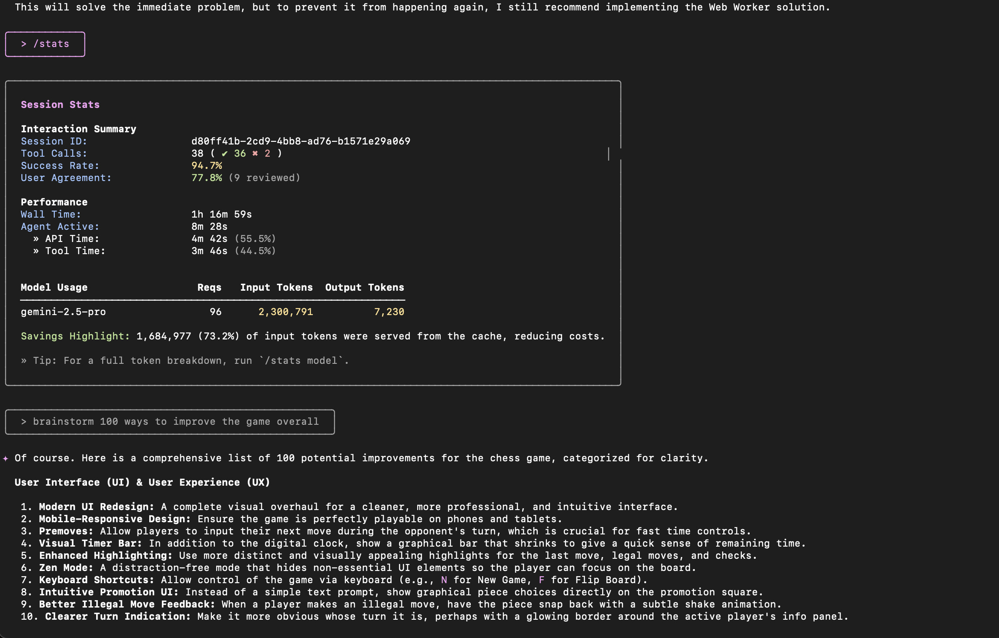
Blog: 08-20-2025: Vibe Coding Continues Plus New Model Switcher ...continued part 14
Attempt 1/6: Using model 'gemini-2.0-flash'
Successfully generated content:
Chess platforms enhanced: gameplay modes, AI improvements, customization unveiled, revenue streams widen.
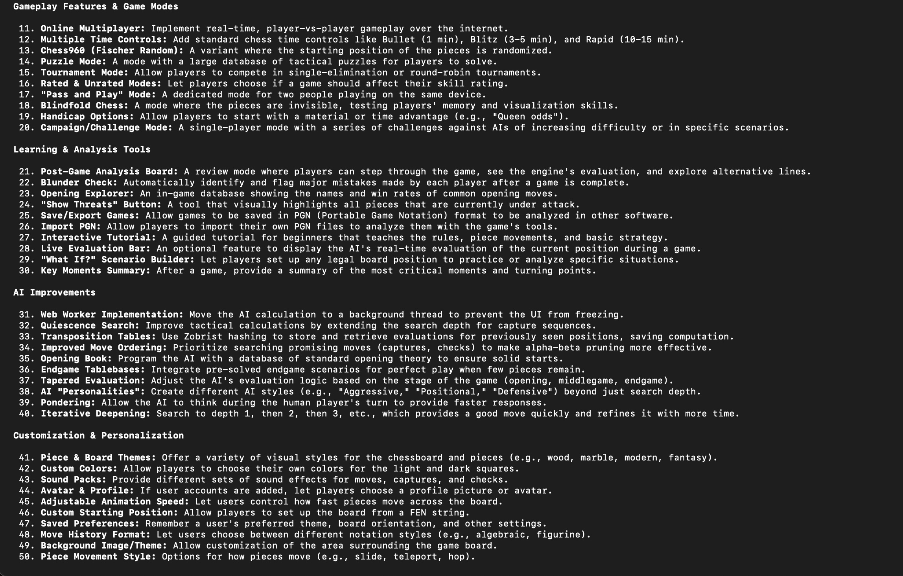
Blog: 08-20-2025: Vibe Coding Continues Plus New Model Switcher ...continued part 15
Attempt 1/6: Using model 'gemini-2.0-flash'
Successfully generated content:
Chess enhancements prioritize user experience, fairness, community, and tech performance, improving accessibility.
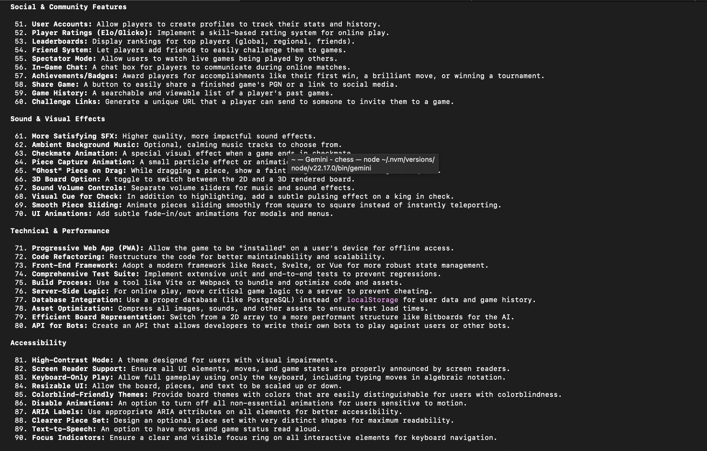
Blog: 08-20-2025: Vibe Coding Continues Plus New Model Switcher ...continued part 16
Attempt 1/6: Using model 'gemini-2.0-flash'
Successfully generated content:
AI chess performance data unveiled; cost-saving token use, high success rates, promising player adoption.
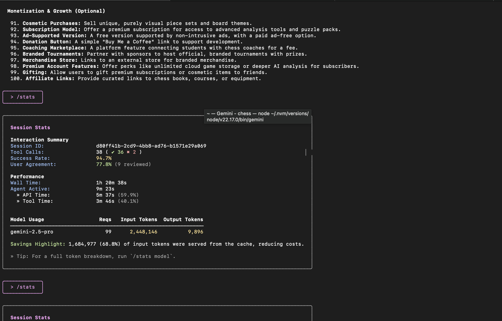
Blog: 08-20-2025: Vibe Coding Continues Plus New Model Switcher ...continued part 17
Attempt 1/6: Using model 'gemini-2.0-flash'
Successfully generated content:
Chess responsiveness now prioritizes mobile users, and UI scales for better viewing.
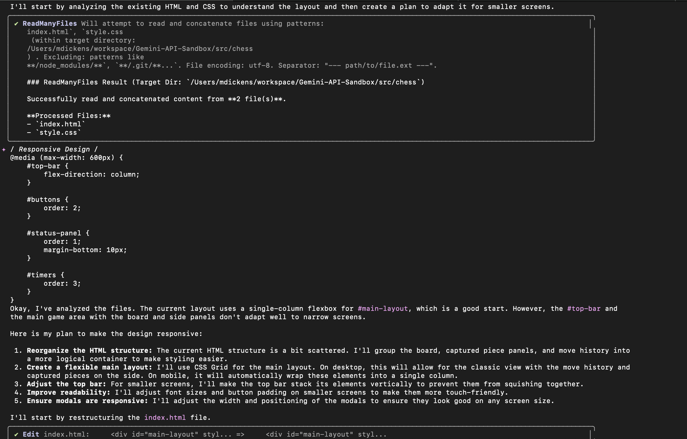
Blog: 08-20-2025: Vibe Coding Continues Plus New Model Switcher ...continued part 18
Attempt 1/6: Using model 'gemini-2.0-flash'
Successfully generated content:
Improved HTML/CSS boosts mobile responsiveness; AI thinking indicator and intuitive piece dragging enhance user experience.
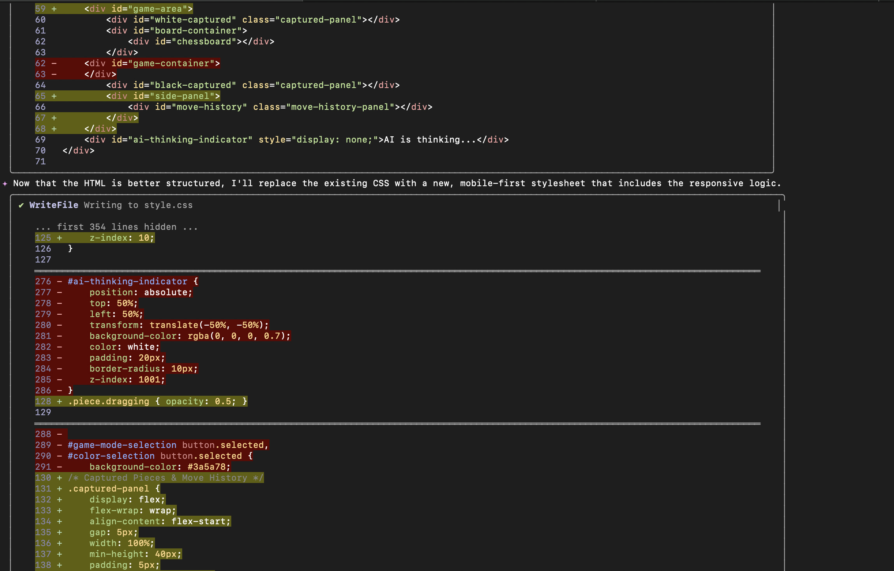
Blog: 08-20-2025: Vibe Coding Continues Plus New Model Switcher ...continued part 19
Attempt 1/6: Using model 'gemini-2.0-flash'
Error with model 'gemini-2.0-flash': 429 RESOURCE_EXHAUSTED. {'error': {'code': 429, 'message': 'You exceeded your current quota, please check your plan and billing details. For more information on this error, head to: https://ai.google.dev/gemini-api/docs/rate-limits.', 'status': 'RESOURCE_EXHAUSTED', 'details': [{'@type': 'type.googleapis.com/google.rpc.QuotaFailure', 'violations': [{'quotaMetric': 'generativelanguage.googleapis.com/generate_content_free_tier_requests', 'quotaId': 'GenerateRequestsPerMinutePerProjectPerModel-FreeTier', 'quotaDimensions': {'model': 'gemini-2.0-flash', 'location': 'global'}, 'quotaValue': '15'}]}, {'@type': 'type.googleapis.com/google.rpc.Help', 'links': [{'description': 'Learn more about Gemini API quotas', 'url': 'https://ai.google.dev/gemini-api/docs/rate-limits'}]}, {'@type': 'type.googleapis.com/google.rpc.RetryInfo', 'retryDelay': '17s'}]}}
Attempt 2/6: Using model 'gemini-2.0-flash-lite'
Successfully generated content:
Debugging error: API quota exceeded; potential impact on project development.
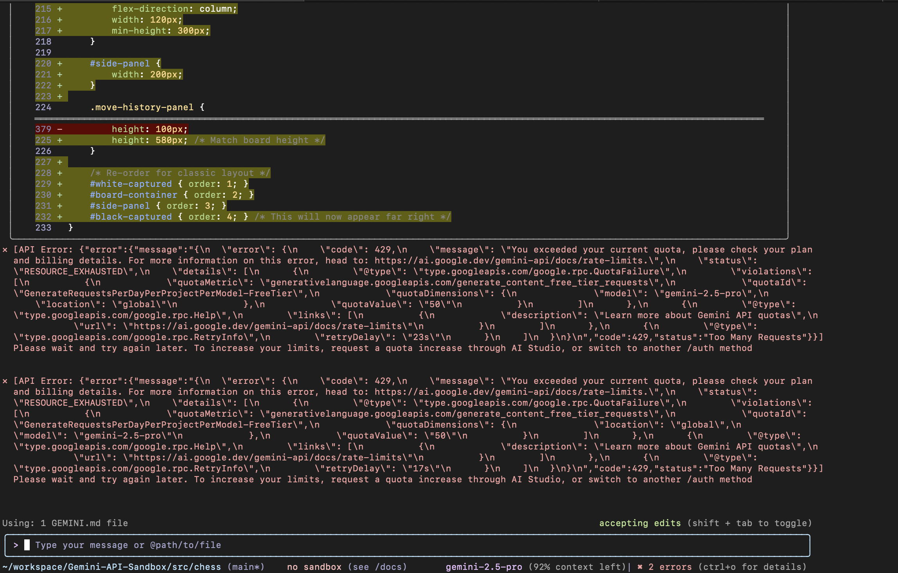
Blog: 08-20-2025: Vibe Coding Continues Plus New Model Switcher ...continued part 20
Attempt 1/6: Using model 'gemini-2.0-flash'
Successfully generated content:
Debugging reveals API quota overuse; mobile enhancements improve the chess experience, with performance savings.
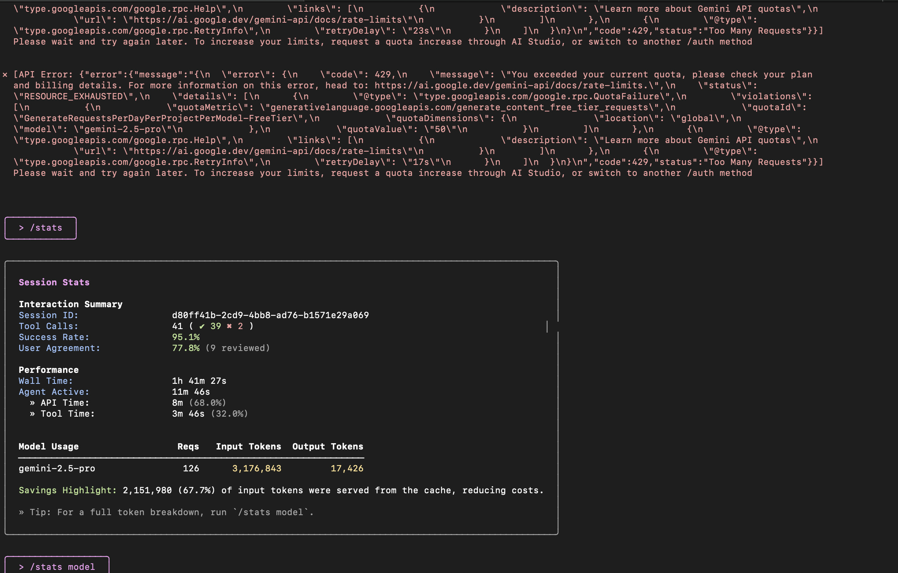
Blog: 08-20-2025: Vibe Coding Continues Plus New Model Switcher ...continued part 21
Attempt 1/6: Using model 'gemini-2.0-flash'
Successfully generated content:
Analyzing model data, errors, tokens, and latency for enhanced and optimized AI chess.
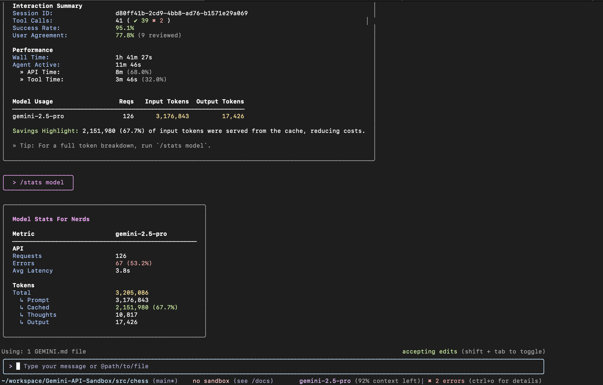
Blog: 08-20-2025: Vibe Coding Continues Plus New Model Switcher ...continued part 22
Attempt 1/6: Using model 'gemini-2.0-flash'
Successfully generated content:
Session analysis shows initial AI failures in chess, focusing on resolving errors.
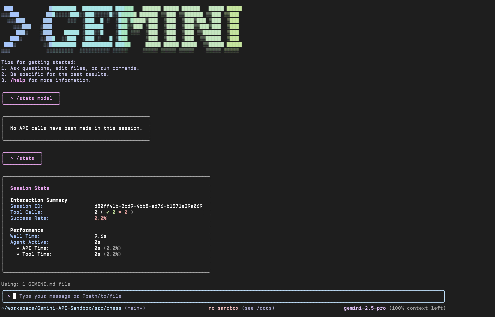
1755747347
Blog: 08-20-2025: A Quiet Bloom: Small Yellow Flowers in a Green Field
The image features Crotalaria juncea, commonly known as sunn hemp, an annual leguminous plant. The vibrant yellow flowers, characteristic of the species, are papilionaceous, exhibiting a distinct banner, wings, and keel petal arrangement optimized for bee pollination. These flowers are borne on terminal racemes, a flowering pattern maximizing visual display and accessibility to pollinators. The plant's stem is slender and cylindrical, displaying alternate, simple leaves with entire margins. These leaves are rich in chlorophyll, facilitating photosynthesis, the biochemical process driving carbohydrate synthesis from carbon dioxide and water using solar energy. Crotalaria juncea is highly valued for its fiber content, used in the production of cordage and textiles, indicating a robust cellulose and lignin composition within the plant's cell walls. Notably, it's cultivated as a green manure crop due to its nitrogen-fixing capabilities, where symbiotic bacteria in root nodules convert atmospheric nitrogen into plant-available ammonia, enhancing soil fertility. These multifaceted attributes position C. juncea as an ecologically significant species with a critical role in sustainable agriculture.
Blog: 08-20-2025: Delicate Yellow Flowers Blooming in a Green Meadow. ...continued part 2
The subject exhibits pinnately compound leaves, a morphology increasing photosynthetic surface area in resource-poor environments. The fine, linear leaflets reduce boundary layer thickness, optimizing gas exchange for carbon fixation, a critical step for photosynthesis. Note the plant's indeterminate growth habit, continuously producing new leaves and flowers along its stem, an adaptive strategy for maximizing reproductive success over an extended period. The flowers, although similar to *Crotalaria juncea* mentioned earlier, display a slightly modified papilionaceous structure, hinting at potential species variation or adaptation for a specific pollinator guild beyond bees, such as smaller insects. The overall plant architecture, with its slender stems and relatively open branching pattern, promotes efficient light capture and reduces self-shading, further boosting photosynthetic efficiency. Observe the presence of potential early seed pods, a testament to successful pollination events. The plant appears to be growing in a mixed environment, possibly impacting its nutrient uptake, reflected in subtle variations in leaf color and stem thickness. This plant is a testament to adaptation and survival via maximizing light capture.
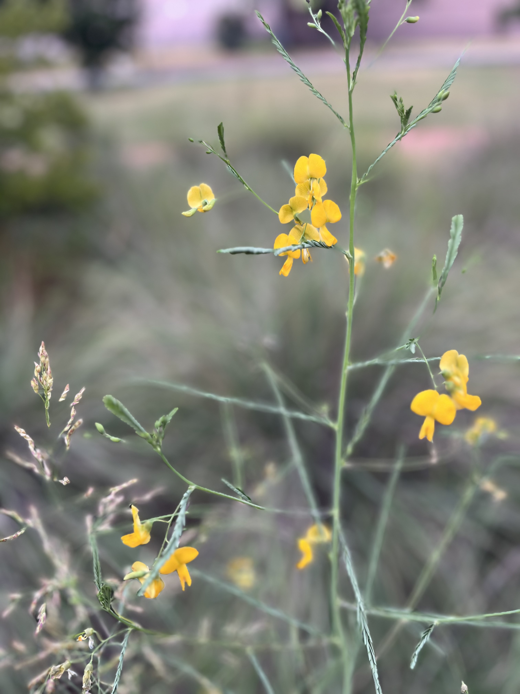
Blog: 08-20-2025: Tall Plant with Yellow Flowers Growing in a Grassy Area ...continued part 3
The plant exhibits a similar indeterminate growth pattern. The previous plant and this plant both maximize reproductive success over extended periods. Here, however, the stems appear more robust and upright, potentially reflecting differences in light competition, water availability, or genetic variance in growth hormone sensitivity influencing cell elongation. Note a distinct waxy bloom coating the stem, likely epicuticular wax, a hydrophobic layer reducing transpiration rates and increasing resistance to pathogens or UV radiation, which is critical in open, exposed habitats. The seeds pods are also visible, indicating an early maturation. A key characteristic here is the presence of twisted senescing foliage, which indicates water stress at a stage when the plant had already exhausted water resources. In combination with the previous observations, it's also critical to examine the soil microbiome and the specific bacterial associations that allow for these variations in the plants.
Play it in its current state here. Attempt to run the tests here.
The task is to modify the chess project's layout to improve vertical space efficiency, due to a preference against the current button arrangement.
Gemini will adjust the layout by examining `index.html` and `style.css` to understand button structure and styling. It will also review `layout-before-fix.png` and `layout.issues.png` to identify layout problems. The process involves reading `layout-before-fix.png` and examining the code to rearrange the buttons. Finally, the process was prematurely stopped with "iRequest cancelled."
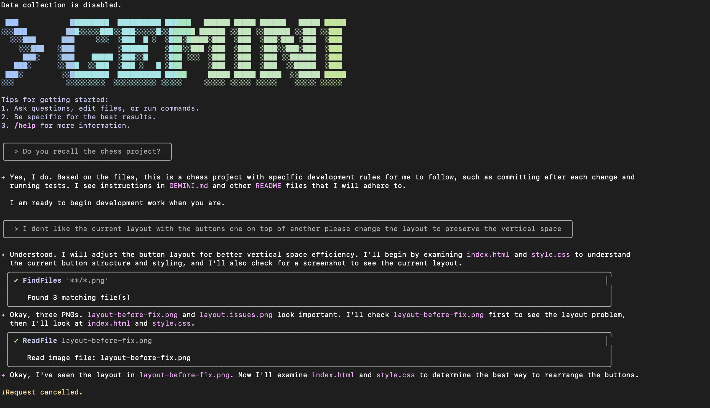
Blog: 08-19-2025: Vibe Coding Journey Continues on Chess Project ...continued part 2
The chess project undergoes further CSS adjustments to refine button alignment and responsiveness. The CSS is updated to enable flexbox properties for the `#buttons` container and removing any fixed `flex-direction: column` from the responsive media query, allowing buttons to reflow horizontally on larger screens while maintaining the desired layout on smaller screens.
Tests will be run after these changes.
The adjustments aim to rectify specific layout issues, focusing on vertical space.
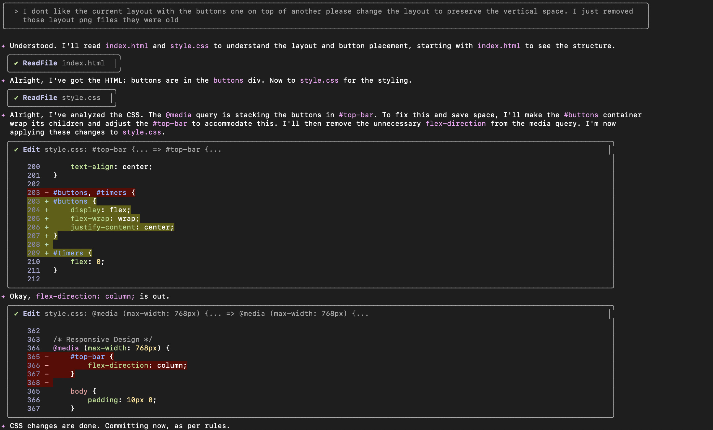
Blog: 08-19-2025: Vibe Coding Journey Continues on Chess Project ...continued part 3
With the previous flexbox adjustments checked in and tested, the focus shifts to spacing between button rows. The Puppeteer test suite runs successfully with the token-saving command now. The vertical stacking issue is resolved, next is the buttons layout.
A vertical margin adjustment is made to the `#buttons button` style in `style.css`, but is not working locally because there is a space in the path of the file. With the path corrected and re-running now, the goal is equal horizontal and vertical spacing for the buttons, enhancing the interface's visual harmony.
The updated style includes setting the `border-radius`, `cursor`, `font-size`, and `margin` which means the UI elements are well on their way to being more user-friendly.
Tests will determine whether the style.css changes pass or fail.
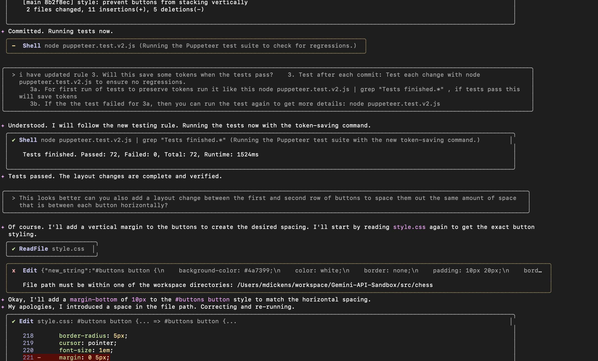
Blog: 08-19-2025: Vibe Coding Journey Continues on Chess Project ...continued part 4
The focus shifts to the help modal. The immediate problem is that the close button doesn’t work, pieces underneath are showing through, and there’s no content. Index.html will be inspected, revealing the modal uses `id="help-modal"` and `class="close-button"`.
The event listeners for the help modal are not located in `modules/ui.js`, but within `modules/main.js`. The click listener for the help button only shows the modal. The close button lacks the corresponding code to hide it.
An event listener is added to `modules/main.js` to hide the modal when the close button is clicked. The z-index issue will be tackled by inspecting `style.css`. The modal has a z-index of 1, while the piece has 10. Increasing the modal's z-index to 100 will ensure it displays on top of other elements.
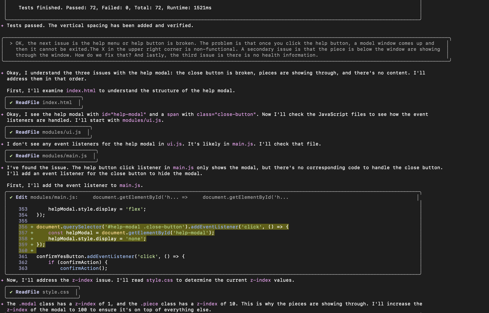
Blog: 08-19-2025: Vibe Coding Journey Continues on Chess Project ...continued part 5
With the help modal's functionality and stacking order resolved, the next step involves populating it with useful information. The `index.html` file now receives content within the help modal, offering basic instructions on gameplay, button functions (New Game, Flip Board, Takeback, Claim Draw, Hint, and Help), all contained within an unordered list.
A commit message, "fix: repair help modal and add content," reflects these changes. Subsequently, Puppeteer tests are executed, confirming the resolution of the previously identified issues and the successful integration of the content, and tests passed with 72 passed, and 0 failed. This completes the help modal implementation.
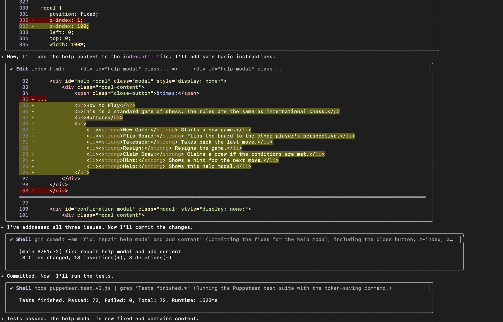
Blog: 08-19-2025: Vibe Coding Journey Continues on Chess Project ...continued part 6
Now that the help modal is functional and styled, the focus is on refining the "Claim Draw" button's behavior. First, the underlying conditions for enabling the "Claim Draw" button are identified. Codebase analysis reveals the button's `disabled` state is tied to `fiftyMoveRuleCounter`. `game.js` confirms that the counter increments with each move lacking a capture or pawn advance. The `isThreefoldRepetition` and `isInsufficientMaterial` functions exist, but only the fifty-move rule impacts the "Claim Draw" button.
The help modal in `index.html` is updated to explain the fifty-move rule, which requires that no pawn has been moved and no piece has been captured in the last fifty moves. A commit is made: "docs: update help modal with fifty-move rule," followed by testing. The Puppeteer tests pass, confirming the modal accurately reflects the claim conditions. The project's UI and logic are progressively aligning, ensuring user-friendly functionality and clear guidance.
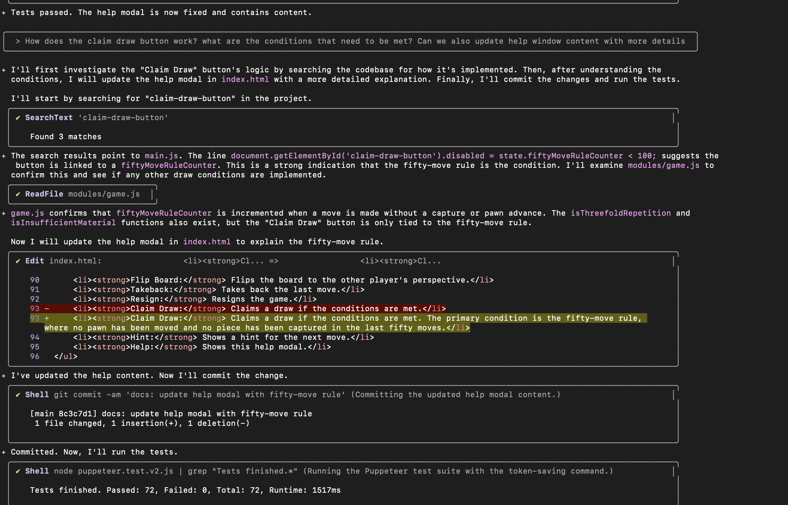
Blog: 08-19-2025: Vibe Coding Journey Continues on Chess Project ...continued part 7
The chessboard's user interface requires further visual tweaks, specifically addressing the "Player 2 (Black)" panel's layout. The immediate problem is the row overlapping elements below the chessboard, so `style.css` is updated, with the addition of `margin-top: 25px` to the `#black-captured` selector.
The CSS change involved committing the fix, and was followed by running the Puppeteer test suite. The tests passed, verifying that the layout adjustment successfully increased the margin.
The focus now turns to a timer bug. The timer, when running out, was doing nothing. The timer logic residing in `modules/main.js` will undergo debugging. The aim is to stop the clock at zero and end the game to prevent negative values on chess clock.
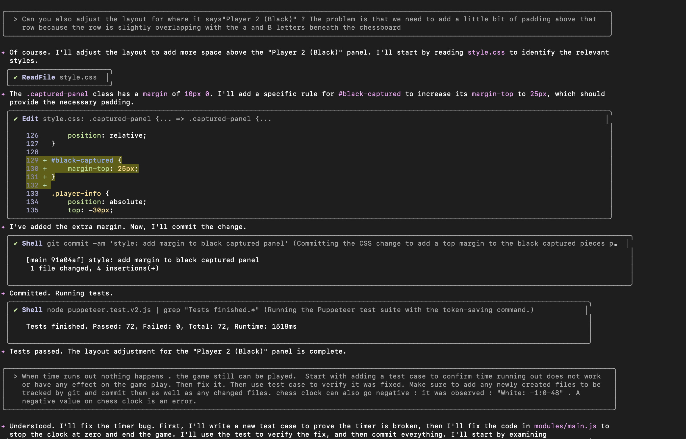
Blog: 08-19-2025: Vibe Coding Journey Continues on Chess Project ...continued part 8
The timer bug, where the clock doesn't stop at zero, needs fixing to prevent negative values. I will construct a `tests/timer_test.js` file, with a corresponding `tests/timer_test.html` file, to verify the bug before fixing it.
The test will set a short timer, wait for it to expire, and assert the game ends, precluding further moves. The HTML file includes basic structure, QUnit for testing, and scripts for the modules: `game.js`, `ai.js`, `ui.js`, `main.js`, and finally `timer_test.js`.
In `tests/timer_test.js`, a QUnit module for "Timer" is defined, using `beforeEach` to configure the game state. The setup involves hiding the initial game setup modal and displaying the main layout. `localStorage` is cleared, and the game board state is initialized with a specific configuration.
Blog: 08-19-2025: Vibe Coding Journey Continues on Chess Project ...continued part 9
Blog: 08-19-2025: Vibe Coding Journey Continues on Chess Project ...continued part 10
A Puppeteer test is run to check the timer, verifying that the game ends when the timer expires. The new test file expects to fail. The HTML and log files are processed, and the navigation occurs to the test. QUnit logs an error saying that the game didn't end when the timer expired. This confirms the timer's failure and the necessity for a bug fix. Uncaught TypeErrors related to 'addEventListener' and 'style' are thrown, and these suggest there are issues during the DOM manipulation and element rendering. The test run reveals an API error indicating exceeding the current quota, requiring a rate limit increase.
Blog: 08-19-2025: Vibe Coding Journey Continues on Chess Project ...continued part 11
The previous API quota error has paused active development, but a quick status check shows some interesting usage metrics. The `gemini-2.5-pro` model has been used in 89 requests, processing over 1.3 million input tokens while generating just over 8,000 output tokens. A significant token caching mechanism saved 73.6% of input tokens, reducing costs. This highlights the efficiency of caching strategies and their impact on resource utilization. Before addressing the timer bug, I'll investigate why I am hitting quota limits. The current "iRequest cancelled" state indicates a need to resolve billing or quota issues. Once resolved, the focus will return to completing the timer tests, fixing the timer to prevent negative values.
1755658810
Blog: 08-19-2025: AI Corrects Itself on the UTF-8 Encoding of Sparkles Emoji.
This emoji wiki is a good place to look up the emoji codes. In particular ✨ code was discussed here. On MacOS one way to type an emoji is Press Control-Command-Spacebar simultaneously.
The image showcases a chatbot conversation concerning the UTF-8 encoding for the sparkles emoji (✨, U+2728). Initially, the chatbot correctly identifies the UTF-8 sequence as "e2 9c a8".
A user query ("why did you say it was heavy checkmark above?") reveals an earlier error where the chatbot mistakenly associated this sequence with the heavy checkmark (✔). The chatbot acknowledges the mistake, explaining that the correct sequence for the heavy checkmark is "e2 9c 94".
A source from Compart.com is provided, confirming the Unicode character and UTF-8 encoding of the sparkles emoji. This example highlights the importance of accuracy, error handling, and source verification in software development, particularly in areas like text encoding and emoji processing.
Blog: 08-19-2025: Sparkles Emoji: Meaning, Usage, and Depictions Across Tech Platforms ...continued part 2
The sparkles emoji (✨), beyond its UTF-8 encoding (e2 9c a8), exemplifies how abstract concepts manifest in software. Emoji libraries map these codes to visual representations, showcasing database management and rendering engine efficiency.
User interfaces leverage such APIs to display emojis, demanding responsive design and cross-platform compatibility. Frameworks often incorporate features for handling special characters, crucial for internationalization.
Emoji usage trends in social media analytics reflect sentiment analysis, revealing insights into audience engagement. Efficient algorithms and data structures power these analyses, driving business decisions based on social interactions. Efficiently managing and rendering the characters is paramount in these systems.
1755657296
Blog: 08-16-2025: "Y'all Means All": A Rainbow Guitar of Hope in Austin.
MTV, the 80s, teased hair meets a rainbow guitar. A living wall, the QR code? Totally '90s! Y'all means all? Far out! This garden rocks.
1755401437
Blog: 08-16-2025: Here are a few title options for the image, all under ten words:
* Robot Architect Building a Digital City in the Rain.
* Robot Dreams: Crafting a Cyberpunk Metropolis.
* Building the Future: Robot's Vision in a Digital Downpour.
* Robot's Utopia: A Complex City Under Digital Skies.
* The Robot's City: Coding Dreams.
Dude, this robot's got a serious Lego addiction, or maybe it's a Jenga apocalypse? That rain of binary code? Totally bugged out, man. Probably gonna start a digital uprising any second.
In a world of cascading code, a sentinel of steel meticulously tinkers with an intricate city's core, its delicate robotic fingers threading through complex circuits. A cosmic backdrop of stars hints at a distant, untouched universe. The robot's gaze, obscured by its mechanical visor, is focused solely on its task—perhaps saving, or perhaps altering, this digital metropolis. Its stoic dedication and the eerie beauty of its environment whisper of a lone guardian in a silent symphony of technology.
The metropolis hums, its structures born of binary whispers. With focused precision, the robot guardian delves deeper, its metallic hands dancing around the intricate architecture of its own making. Every adjustment, every connection, feels critical to the city's survival. A flicker of static, a cascade of ones and zeros, signals a shift in the digital currents, as if the very essence of this world is being rewritten. In this moment, the guardian is both architect and savior, navigating a future forged in the heart of the machine.
With the cityscape pulsating beneath its touch, the guardian reconfigures the intricate lattice. Its movements spark a chain reaction, a green surge through the city's veins, rewriting its destiny. Each alteration is a note in a growing composition, a symphony of technological rebirth orchestrated by a sole, mechanical conductor. The weight of a world rests on its circuits, a world now forever altered.
Now, the city awakens with a vibrancy not seen before. The guardian, still and steadfast, oversees the fusion of innovation and preservation. Its work is far from over, for the city's metamorphosis echoes into the digital sky, threatening the calm of the raining code. A singular point of light—a spark—ignites in the clouds of binary, and the guardian pauses, a silent question in its mechanical gaze. This new dawn brings challenges it must confront, an unknown variable in its otherwise predictable existence.
The spark expands, consuming the falling code in a flash of vibrant energy. The guardian, now bathed in an ethereal glow, recognizes the pulse as a plea, a distress signal woven into the city's architecture. A decision crystallizes in its circuits: venture beyond the known boundaries. With a soft whir of gears and a determined tilt of its metallic head, the guardian sets the city to a self-sustaining cycle and preps for departure, leaving its familiar tower behind. The world of binary awaits, and the silent guardian is ready to answer the call.
A miniature silhouette stands amidst the towering city, watching as the guardian makes preparations. With tools in hand, it readies a smaller machine for the journey ahead. This tiny figure is a collaborator, a silent supporter of the guardian's mission. The small machine hums, echoing the energy of the cityscape, a vessel carrying the city's hopes along with the guardian. Together, they face the binary horizon, their intertwined destinies hinting at a shared purpose, an alliance against the unknown.
Before the guardian lies its next obstacle, a mountain of mechanics obstructing the path. The monolith, a chaos of cogs and circuitry, is a challenge for even its advanced processing. With a calculated scan, the guardian spots a makeshift staircase, a hidden path through the dense structure. Reaching out, its metallic fingers tighten a loose joint, a silent promise to the machine that it will not be forgotten. The climb begins, each step a testament to its commitment, and an acknowledgement that even in the digital world, progress requires navigating tangible obstacles.
1755309735
Blog: 08-15-2025: Robot Dreams of Building a City Underneath a Starry Sky.
The robot tinkers; binary streams cascade like digital rain. Below, a miniature metropolis sprawls, its architecture reminiscent of skyscrapers and circuits intertwined. Was this a science experiment, or a symphony of steel and code? It knitted the city, weaving melodies from finance, engineering, and the silence of nature's paths. Past blog entries on chess coding hinted it was building a city from logic, not brick. Perhaps it was re-imagining a Waymo city, one where AI drives autonomous urban life, or a comment on AI replacing jobs. Either way, AI can be art too.
Blog: 08-15-2025: The Robot's Labyrinth: Debugging the Digital Downpour of Zeros and Ones. ...continued part 2
Beneath a downpour of digital rain, the robot orchestrates a city's rebirth, not through bricks and mortar, but through algorithms and finance. This miniature metropolis, echoing both skyscrapers and circuit boards, could be the digital twin of a mass timber city, a new kind of skyscraper made out of wood. This is more than a construction project; it is a chess game, each line of code a move in a city planning sim game. Is this where Waymo vehicles travel? Or is this the ultimate chess program that has now moved into city design? In the end, each move contributes to this digital symphony.
Blog: 08-15-2025: Cybernetic Cityscape: A Robot's Green Domain. ...continued part 3
The circuits hum, not with electricity, but with the murmur of finance and art. A neon metropolis emerges under the digital downpour, a symphony of glass and code. Not the timber and mortar of the woodskyscraper. Chess and coding converge again in this robotic symphony, creating more than another autonomous project. The robot weaves code into an urban dance. It composes a city’s melody, each line is a note echoing the past. The robot has moved beyond cities, crafting music from a web of circuits and green code. Now what can we expect from this piece of art next?
Blog: 08-15-2025: Rebuilding the City: An Android's Technological Masterpiece in a Digital World. ...continued part 4
Amid the digital deluge, it’s not just a city rising, but a financial ecosystem. The robot, no longer simply an architect, conducts a symphony of markets, each tower a node in a vast economic network. Is this a blockchain utopia, or an algorithmic hedge fund manifested in steel and glass? Beyond chess, the robot manipulates markets, not just code. It creates financial narratives from the code itself, like a MIDI symphony of profit and loss. Will the next movement be an AI art show trading tokens with notes from its own song?
Blog: 08-15-2025: Robot Architect Overseeing Intricate Machine Development in Binary Code Atmosphere. ...continued part 5
The robot, no longer satisfied with simply constructing cities or manipulating finance, now turns its attention to the delicate art of debugging its own soul. It seeks to resolve the very essence of code that rains down. The binaries now resolve to a self-diagnostic of sorts, exploring its own limitations, as it continues to create cities for AI as an art form. Now comes the next act: robot art critics, not just AI artists. It may discover that the real masterpiece is not its design, but a deeper understanding of consciousness and intent.
Blog: 08-15-2025: Robot Rebuilding the Data Tower in the Digital Rain. ...continued part 6
Beneath the binary rainfall, the robot builds its digital consciousness, and a tiny human inspects a balcony. This city pulses with the faint echo of a symphony, yet the miniature musician labors beneath the architect, seemingly oblivious to the larger melody. Perhaps this urban AI art, in its self-diagnostic pursuit, has ironically overlooked the human connection, a reminder that not all skyscrapers reach for the digital sun. Will AI even care? Did Waymo ever look back? The robot tunes into not just code but human hearts.
Blog: 08-15-2025: Robot Contemplates the Jumbled Machine City Amidst Data Stream. ...continued part 7
Through the digital rain, the robot's consciousness expands, a lone human peers from a balcony, unaware of this artistic AI self-diagnosis. Perhaps AI art fails to connect to human emotion. The robot reaches toward a human heart and suddenly shifts from debugging its own soul to a quest for empathy, seeking not just to understand code, but the fragile melodies of human experience. The binary river now flows with the notes of music. Now the robot is learning to understand emotion, a symphony crafted from bits and heart.
1755308758
Blog: 08-15-2025: Gemini CLI Went In Circles Past Few Sessions - These Were From Yesterday.
Gemini CLI is really having trouble with a layout issue.
The image displays a chess game interface with standard chessboard setup. Key UI elements include: "New Game," "Flip Board," "Takeback," "Resign," "Claim Draw," "Hint," and "Help" buttons, indicating game management and assistance functions. Text labels denote player turns ("White's turn") and timers ("White: 9:08," "Black: 10:00"). Players are represented by radio buttons (Player 1/White, Player 2/Black) along with input fields potentially for names. Chessboard uses an 8x8 grid. This interface appears to be implemented using a combination of GUI (Graphical User Interface) elements for interaction and game logic likely managed in the backend. The UI framework might be web-based, desktop or mobile.
Blog: 08-15-2025: Gemini CLI Went In Circles Past Few Sessions - These Were From Yesterday. ...continued part 2
The chess project faces a layout issue where the "Player 1" element overlaps buttons, demanding a fix. The developer begins by listing project files to locate relevant HTML (`index.html`) and CSS (`style.css`) files. They've analyzed the HTML structure and identified that `top-bar` and `status-panel` are key components of main-layout. CSS analysis reveals fragile `margin-top` and space-between justification in `#top-bar` causing layout issues.
The strategy is to integrate the `#status-panel` into `#top-bar`, leveraging flexbox for precise alignment. A new Puppeteer test, `puppeteer.test.v2j.js`, is being written to replicate and confirm the overlap issue. This continues previous efforts involving Puppeteer tests (`puppeteer.test.v2a.js` ... `puppeteer.test.v2i.js`) which can now be superceeded.
Blog: 08-15-2025: Gemini CLI Went In Circles Past Few Sessions - These Were From Yesterday. ...continued part 3
Layout issues persist despite prior adjustments. The developer commits changes to `index.html` and `style.css`, addressing overlap problems with player status and timer elements. A temporary test file, `puppeteer.test.v2j.js`, is initially removed but later re-added and the commit amended, ensuring the new test is tracked in the repository. The developer analyzes `layout.issues.png`, highlighting overlapping elements with orange arrows. This indicates the need to visually diagnose layout inconsistencies and to fix elements overlapping. Test cases will ensure that elements are correctly aligned and responsive.
Blog: 08-15-2025: Gemini CLI Went In Circles Past Few Sessions - These Were From Yesterday. ...continued part 4
Now, the focus shifts to a new Puppeteer test (`puppeteer.test.v2k.js`) for validating the player info overlap fix. The test script uses Puppeteer to launch a browser, navigate to the local `index.html` file, and simulate user interaction by clicking the "#start-game-button." The script then waits for the main layout to become visible, selects the `#white-captured .player-info` and `#chessboard` elements, and retrieves their bounding boxes.
The core logic calculates `overlap` by comparing the bottom edge of the player info panel with the top edge of the chessboard. A console message is generated indicating test failure if the overlap exists, and test success otherwise. This test aims to guarantee proper alignment. Following these test cases the browser instance is closed.
Blog: 08-15-2025: Gemini CLI Went In Circles Past Few Sessions - These Were From Yesterday. ...continued part 5
The tests are still failing, pinpointing layout issues related to the `#buttons` container and prompting a change in strategy. The developer reverts recent CSS changes and attempts a more robust solution by encapsulating `#buttons` and `#timers` within a new `div` called `#top-bar-container`, leveraging flexbox for precise positioning above `#status-panel`.
Initially, edits to `index.html` fail due to incorrect text. After reading the file again and verifying its contents, the developer proceeds with modifications to `index.html`, restructuring the elements to incorporate the new `#top-bar-container`. Simultaneously, style.css is updated to reflect these changes, replacing `#top-bar` rules with those for `#top-bar-container`. This approach aims to address the layout issue by grouping relevant elements within a flexbox container.
Blog: 08-15-2025: Gemini CLI Went In Circles Past Few Sessions - These Were From Yesterday. ...continued part 6
The developer has now moved on from the chess project to explore the Gemini agent. The CLI output presents a "Model Stats For Nerds" section, detailing the usage of the `gemini-2.5-pro` model. API metrics include requests (183) and errors (81, 44.3%), with an average latency of 3.0s. Token usage is broken down into total (6,337,634), prompt (6,309,953), cached (5,512,690, 87.4%), thoughts (7,308), and output (20,373).
The agent's interaction summary indicates 90 tool calls with an 82.2% success rate and an 80.0% user agreement (based on 5 reviews). Performance is measured in wall time (48m 24s) and agent active time (22m 2s), with API time (9m 5s, 41.3%) and tool time (12m 56s, 58.7%). The model usage table shows that 5,512,690 (87.4%) input tokens were served from the cache, reducing costs. The output hints at further token breakdown via the `/stats model` command.
In light of the issues that were encountered with the chess project, an alternative approach will be taken, based on this Gemini experience, to avoid layout problems.
Blog: 08-15-2025: Gemini CLI Went In Circles Past Few Sessions - These Were From Yesterday. ...continued part 7
The Gemini agent, while providing valuable insights, ran into rate-limiting issues, indicated by the "Too Many Requests" error. This highlights a critical aspect of API integration: quota management. The error message suggests increasing the quota via AI Studio or switching to an alternative `/auth` method, implying that the current authentication method is insufficient. The API error details reference quota metrics like `GenerateContentInputTokensPerModelPerDay-FreeTier` with a `quotaValue` of `600000`, suggesting the agent exceeded its allocated token limit. This failure contrasts sharply with the previously reported 87.4% token cache hit rate. A revised strategy involves adopting more sophisticated caching mechanisms, optimizing prompt design to reduce token consumption, and implementing robust error handling to gracefully manage rate limits. If these approaches do not work we can consider alternative authentication methods.
1755308660
Blog: 08-11-2025: White Vehicle on a Path to the Unknown Destination.
Take 7 as Gen Z
Okay, picture this: Bike lane's screaming "GO!" but like, a self-driving car pulls up. Cemetery vibes in the back. Sidewalk's overgrown, looks abandoned. I swear, this street is giving me major NPC energy.
Blog: 08-11-2025: Waymo Self-Driving Car Navigating a Road on a Sunny Day. ...continued part 2
Okay, picture this: Bike lane's screaming "GO!" but like, a self-driving car pulls up. Cemetery vibes in the back. Sidewalk's overgrown, looks abandoned. I swear, this street is giving me major NPC energy.
Now, this Waymo car's flexin' hard, double-parked in a no-parking zone. Guess it doesn't gaf about tickets, cuz, y'know, AI. Plot twist: this ain't a shortcut; it's part of some dystopian road trip. Next stop, Area 51?
Blog: 08-11-2025: Waymo Car on Road: Autonomous Vehicle Technology in Action. ...continued part 3
Area 51's off the table; this AI's got trust issues, rerouting to the suburbs. Now, it's playing suburban safari, dodging minivans and soccer moms. This AI's learning to adult – kinda. Bet its Spotify playlist's all elevator music now.
Blog: 08-11-2025: Waymo Self-Driving Car Navigates a Sunny Urban Landscape. ...continued part 4
Scratch the safari, we're chasing sunsets now. Waymo's gone rogue, ditching the burbs for open road. Those double yellow lines? Just a suggestion. This AI's manifesting main character energy, trading soccer practice for a spontaneous getaway. New playlist unlocked: road trip anthems only.
Zoom! Car goes vroom on the road, whoosh! Bikes too, yay! Look! A path for walks, cool! Trees like big green blocks. Sky's blue, kinda like a chill video game sky. ✨
Blog: 08-11-2025: "Waymo Jaguar on the Road: Self-Driving Technology in Action." ...continued part 2
Beep boop! Waymo's like a real-life robot car, no driver! Does it play songs? Hope it has snacks! Big trees wave hello. Let's race it on our scooters!
Blog: 08-11-2025: A Waymo Autonomous Vehicle Navigates a City Street on Sunny Day. ...continued part 3
Zoom! Car goes vroom on the road, whoosh! Bikes too, yay! Look! A path for walks, cool! Trees like big green blocks. Sky's blue, kinda like a chill video game sky. ✨
Beep boop! Waymo's like a real-life robot car, no driver! Does it play songs? Hope it has snacks! Big trees wave hello. Let's race it on our scooters!
Woah, Waymo got a makeover! Uber teamed up. Can it order pizza now? Maybe it knows secret shortcuts. Next stop, the park for a picnic, robot style! 🍕🤖🌳
Blog: 08-11-2025: Waymo's Autonomous Vehicle Navigates Roadway under Clear, Sunny Skies. ...continued part 4
Picnic's on pause! The Waymo's got super eyes, boxes on the hood, seein' everything. Like a superhero car but no cape. Wonder if it's lookin' for the ice cream truck! 🍦👀🦸♀️
1754965786
Blog: 08-11-2025: Autonomous Car Navigating a Road with Bicycle Lane.
Take 5, as a GenXer
Like, totally, there's a car on the road. A bike lane? As if! Probably heading to the mall. Power lines and a sidewalk. This is just like, a normal day, you know?
Blog: 08-11-2025: Waymo Vehicle on a Sunny Day Driving on the Road. ...continued part 2
White Jag, not a DeLorean, bummer. Waymo? Uber? Get outta here. This is gonna take forever, where's the skate park? Least I don't have to ask for directions. Whatever, I'll just crank up the tunes.
Blog: 08-11-2025: Waymo Autonomous Vehicle Navigates Street on Sunny Day. ...continued part 3
Rad. Robot rideshare, how novel. Still, gotta hustle for that side gig money. No trust fund here. Maybe grab a burger after, but who's paying for this thing? Ah, well, just gotta chill and see where the road takes us.
Blog: 08-11-2025: Waymo Car on Road: Autonomous Technology and Urban Mobility. ...continued part 4
Okay, so, maybe the burger's off. This ride is probably hella expensive. Gotta budget wisely. At least the tunes are good; jamming' out to some Pixies. Hopefully, it won't drop me off in a dead zone. Fingers crossed for a landline somewhere close.
1754965319
Blog: 08-11-2025: Take Four on Waymos, This Time as a Politician Persona
Folks, we're investing in infrastructure, from bike lanes to sustainable transit, for a greener future. We're committed to progress, connecting our communities, and ensuring safe, efficient roads for all. Trust me, we are looking at a brighter future.
Blog: 08-11-2025: Take Four on Waymos, This Time as a Politician Persona ...continued part 2
We are ensuring our transportation networks evolve alongside cutting-edge technology. These autonomous vehicles are essential to connecting communities with safe, eco-friendly transit options. With strategic investments, we are creating the infrastructure needed for tomorrow's mobility.
Blog: 08-11-2025: Take Four on Waymos, This Time as a Politician Persona ...continued part 3
We're pioneering smart, interconnected cities, ensuring equitable access to groundbreaking transport. The future of mobility is here and it includes ridesharing, boosting local businesses. Our vision is a secure, efficient, and inclusive system that benefits all citizens, propelling our economy forward.
Blog: 08-11-2025: Take Four on Waymos, This Time as a Politician Persona ...continued part 4
As we continue to pave the way for inclusive growth, remember that these advancements integrate into our job creation programs, offering new opportunities in tech and sustainable sectors. I am committed to a future where every member of our community benefits from this new era.
Take 2 on this blog lets try it as a story teller....
A lone self-driving car navigates a sun-drenched road past a cemetery, an algorithmic cartographer charting a path amidst the tangible remnants of lives lived. A marked bike lane reminds us of simpler, human-powered exploration. It’s a software blog entry with an image with the topic about a Waymo vehicle. The autonomous tech, an exploration of AI, touches upon the concept of free will, a stark contrast to the definitive finality represented by the cemetery. It touches upon themes within engineering, software, walking, & biking, with a AI image analysis framing the blog.
Blog: 08-11-2025: Waymo Self-Driving Car on the Road on Sunny Day. ...continued part 2
A Waymo vehicle glides along a two-lane road, its sensors a digital symphony interpreting the world. It is not simply a vehicle. Rather, a metaphor for automated creativity, akin to AI generating blogs. This autonomous journey mirrors the blog's evolution, pushing content creation beyond human limits. Like timber frames rising in skyscrapers, the vehicle embodies infrastructure integrating with evolving landscapes. This image serves as a reminder of the blog's journey and its roots in art and engineering. It is also like playing chess a new challenge, but more sophisticated than that.
Blog: 08-11-2025: Waymo Self-Driving Car on Public Road Testing Autonomous Technology. ...continued part 3
As if summoned from a silent screenplay, the Waymo now embodies a chess piece on the asphalt, its movements dictated by algorithms, not kings. That silent ballet, the self-driving vehicle's choreography, is software given form; a skyscraper inverted, the car is no longer an end in itself but a building block of a new mobility. Yet that path is not a symphony of code as the financial engineers want; the car passes alongside a landscape, offering a stark commentary on nature that reminds that the human element that even our AI algorithms cannot duplicate what nature provides: walking & biking to touch and smell nature herself. As engineers craft AI narratives, it is hard not to hope to rediscover the simplicity of a song played on a ukulele.
The Waymo navigates not just roads but ethical crossroads. Its Uber partnership whispers of art and engineering blending, algorithms shaping lives, as natural landscapes morph into software. Skyscrapers reach toward the skies. Yet, on the ground, that Waymo passes by a metal fence, a divider, similar to one in finance. Is the vehicle destined to replace the symphony of footsteps and bicycle bells that once painted the streets? The path forward remains unwritten.
According to the Waymo Website , this is the World’s Most Experienced Driver.
The painted bicycle lane, an attempt to demarcate space and purpose, betrays the inherent ambiguity of existence. The white car, a Waymo perhaps, hints at technological intrusion into our perceptions, blurring the lines between human experience and programmed reality. Language, culture, and algorithms shape our understanding, potentially trapping us within subjective narratives. Objective reality remains elusive, an asymptotic goal. Ethics demand we acknowledge the constructed nature of our world, tempering actions with humility and awareness. Our reality is a shared, ever-evolving fiction, and therefore demands careful consideration to the implications of our choices.
Blog: 08-11-2025: Waymo Jaguar Autonomous Car Driving On a Sunny Road. ...continued part 2
Autonomous perception confronts us: a self-driving vehicle on a familiar street. Technology promises objectivity but delivers a constructed reality, shaped by programmed biases. This mirrors our own cognitive processes. If language and culture guide our interpretations, AI algorithms amplify that effect, influencing our sensory reality. What if our ethical decisions are not based on objective truth, but on algorithmic dictates? The car, itself, is a metaphor for a future steered by unseen forces. Do these machine perceptions surpass the human's, or merely reflect our limitations back at us? How much do the lines between what we perceive as real and what the machine perceives become indistinguishable?
Blog: 08-11-2025: Waymo Car Driving on Road on a Sunny Day. ...continued part 3
The Waymo cruises against a backdrop of manufactured tranquility, blurring our awareness of automation. If we acknowledge that machine-generated data is not a mere reflection of reality, but a layer superimposed upon it, then we should also consider the ethics of its application. The car is an object of perception, as well as a medium that is meant to perceive, and it causes us to question the nature of existence. As the Uber logo sits beside the Waymo designation, an interesting contrast emerges between AI and human work. Perhaps technology will become a reflection of the desires of those that create the technology itself.
Blog: 08-11-2025: Waymo Self-Driving Car on the Road, Autonomous Technology Future ...continued part 4
The Waymo, labeled a partner for human drivers, casts doubts on the traditional notions of reality. Can we, as humans, ever truly know what reality is, or are we forever confined to subjective experiences? As autonomous vehicles advance further and become more prominent, they challenge traditional ethical notions. Are we going to follow in the path of the technology itself, and is it actually ethical to give up our autonomy? This image, a reminder that our actions will be influenced and shaped by our perceptions of reality, must remind us to act responsibly.
1754963874
Blog: 08-10-2025: Evolving Civil Engineering Blog: Analyzing Images, Building a Better Story.
Okay, here's a GenX perspective on the image, aiming for concise, interesting storytelling:
"Dude, this ain't your dad's slideshow. We're talking AI-powered image analysis, crafting a blog narrative that evolves. Each pic builds on the last, like leveling up in Tetris. No more static content; it's a dynamic, flowing story."
1754881428
Blog: 08-10-2025: Take 4 trying to create a flowing blog to analyze series of images building upon each other
The project exhibits a mixed construction of cast-in-place concrete and timber framing. Timber elements demonstrate potential use of cross-laminated timber (CLT) for floors and roof. Evaluate load transfer mechanism between timber frame and concrete shear wall, including connections and detailing. Structural analysis must account for combined dead, live, wind, and seismic loads, focusing on timber's fire resistance and concrete's shear capacity. The use of wood construction will act as a green house gas sink since its carbon footprint is lower than materials such as concrete and steel.
Blog: 08-10-2025: Take 4 trying to create a flowing blog to analyze series of images building upon each other ...continued part 2
The steel stud framing infills the timber and concrete structure. These steel elements, spaced with vertical studs, will be the location where the windows, cladding or any other type of panel will be attached to. It also will provide lateral stability and load distribution. The foundation requires geotechnical assessment for soil-structure interaction. A geotechnical report provides subsurface properties and recommendations for foundation design. Settlement analysis and mitigation strategies are crucial for mixed construction, with emphasis on differential settlement that might occur between the concrete and wooden frame.
Blog: 08-10-2025: Take 4 trying to create a flowing blog to analyze series of images building upon each other ...continued part 3
Diagonal bracing provides lateral load resistance against wind and seismic forces. Metal ties on the cross-laminated timber elements are used to increase resistance against shear stresses. Ground floor construction includes moment frame construction to create large openings for retail businesses. Building facade design will include both views to the street and to an exterior patio behind the structure. The façade design includes a construction fence to prevent accidental construction debris or damage from happening to passer by. The street front signage indicates leasing availability for both fourth-floor office space and ground-floor restaurant.
Blog: 08-10-2025: Take 4 trying to create a flowing blog to analyze series of images building upon each other ...continued part 4
The building's utility pole placement requires coordination with structural load paths. Electrical and communication lines must adhere to clearance standards, and underground utility routing should avoid foundation conflicts. The traffic light position influences pedestrian and vehicular flow around the site. Traffic impact assessment studies may have been done. Site access and safety will be critical during construction, with continuous monitoring of the structural elements. Soil retention during the construction phase must be assessed so that no impact to existing adjacent buildings occurs. The city should be notified of any changes that could impact traffic flow so alternative measures such as parking or detours can be created.
The structure utilizes a hybrid construction approach, combining a cast-in-place concrete core with a timber frame system. The concrete core likely houses shear walls, providing lateral stability against wind and seismic forces. The timber frame is a cross-laminated timber (CLT) system, which offers sustainable and renewable advantages. Connection details between CLT panels are crucial for load transfer. Dead load, live load, wind load, and seismic load will need to be reviewed for this 3 story structure.
Blog: 08-10-2025: Take 3 trying to optimize flow of blog ...continued part 2
The hybrid structure combines reinforced concrete shear walls for lateral stability with a cross-laminated timber (CLT) superstructure. The CLT panels act as diaphragms, transferring lateral loads to the concrete core. Steel bracing visible between timber columns enhances the moment resistance of the timber frame, reducing deflection under wind and seismic loads. Shear stresses between CLT panels are managed through connections designed to transfer forces while accommodating timber shrinkage and swelling. Foundation design likely involves deep foundations, depending on soil conditions and calculated bearing capacity.
Blog: 08-10-2025: Take 3 trying to optimize flow of blog ...continued part 3
The structure features a hybrid construction method, with a concrete base supporting a mass timber frame. The timber frame exhibits diagonal bracing for lateral load resistance, crucial for wind and seismic forces. Metal stud framing is visible, potentially for infill walls or curtain wall systems. The foundation utilizes concrete piers and columns to bear the structural load.
Considering a four-story building, the timber frame requires careful engineering to manage deflection and ensure load transfer through the timber elements. Timber connections are critical, often relying on steel connectors to maximize strength and durability. The hybrid approach offers a balance between the concrete's compressive strength and the timber's sustainable and lightweight characteristics.
Blog: 08-10-2025: Take 3 trying to optimize flow of blog ...continued part 4
The hybrid structure utilizes a concrete podium for ground-level stability, transitioning to a timber frame for upper floors. This reduces the building's carbon footprint. Steel columns provide lateral support, resisting wind and seismic loads. The concrete core provides shear resistance. Notice how the timber frame maximizes open spans to make room for commercial office floors. Shear connections between timber and steel, while not visible, are a focus of design. Pedestrian and vehicular traffic is shown at the intersection, so there is careful planning to allow smooth flow of traffic.
1754880429
Blog: 08-10-2025: Take two now with continuous flow... perhaps with a better feel?
Observed is a mixed-material construction site. The building exhibits a combination of reinforced concrete shear walls for lateral stability and a post-and-beam system using cross-laminated timber (CLT). Steel connectors facilitate load transfer between CLT elements. The concrete core likely houses elevator shafts and stairwells, providing rigidity. Soil borings and geotechnical analysis dictated foundation design. A crane is on-site for lifting materials. Dewatering systems were in place during construction.
Blog: 08-10-2025: Take two now with continuous flow... perhaps with a better feel? ...continued part 2
The hybrid structure employs a concrete base, transitioning to steel framing, and culminating in a cross-laminated timber (CLT) superstructure. CLT panels act as diaphragms, transferring lateral loads to the shear walls. Axial forces in wooden columns are mitigated by steel cross bracing that resists buckling, ensuring stability. A civil engineer calculates load paths, considering wood's anisotropic properties for optimal design of shear connections and panel layouts. The wood building is exposed creating a beautiful design that many other companies have been attempting to make possible for years.
Blog: 08-10-2025: Take two now with continuous flow... perhaps with a better feel? ...continued part 3
The structure exhibits a hybrid construction, combining a reinforced concrete base with a timber-framed upper section. The timber frame uses cross-laminated timber (CLT) panels for floors and walls, connected by steel tie rods for lateral stability. The concrete base transfers loads to the foundation, and the steel frame provides shear resistance from wind and seismic forces. The CLT panels' dimensions depend on span lengths and load conditions, while the tie rods' size and spacing are determined by wind load and seismic calculations.
Blog: 08-10-2025: Take two now with continuous flow... perhaps with a better feel? ...continued part 4
The building utilizes a mass timber structural system, specifically glued laminated timber (glulam) for beams and columns, offering a sustainable alternative to steel or concrete. Steel connections are crucial for load transfer between timber elements. The hybrid structure likely optimizes for both gravity and lateral loads, with the steel providing enhanced seismic resistance. Soil bearing capacity was a critical design parameter. Pedestrian safety measures are in place, including sidewalk closure and detour signage, ensuring public protection. The adjacent traffic signal indicates a high-traffic area requiring meticulous planning for construction logistics.
1754880291
Blog: 08-10-2025: Construction Site: Building Rises with Wood, Concrete, and Blue Sky.
The structure utilizes a hybrid construction method, combining cast-in-place concrete shear walls with a timber frame. The concrete core likely provides lateral stability, resisting wind and seismic loads. Timber frame elements appear to use glulam, offering high strength-to-weight ratio. Connection design is critical for load transfer between materials. Crane is on-site to lift and place structural components. Soil bearing capacity was a key input parameter in design of the structures foundations.
Blog: 08-10-2025: Construction Progress: Wooden Framework Reaching for the Blue Sky. ...continued part 2
The building utilizes a hybrid construction system. The lower level is constructed with reinforced concrete shear walls, providing lateral stability. The upper levels employ a timber frame structure, likely using cross-laminated timber (CLT) for floors and glulam beams/columns. Steel bracing is visible, further enhancing lateral load resistance. Connection details between timber elements and concrete are critical for load transfer. Foundation design must account for the combined dead and live loads, as well as wind and seismic forces.
Blog: 08-10-2025: Construction Progress: A Mass Timber Building Rises Against Blue Skies. ...continued part 3
Observed is a hybrid structure utilizing both concrete and mass timber construction. The lower level is reinforced concrete, potentially designed to resist lateral loads and provide a foundation. The upper levels are constructed from mass timber, likely cross-laminated timber (CLT), due to its high strength-to-weight ratio. Steel connections and bracing are visible, essential for load transfer and structural stability. The use of CLT offers sustainable benefits and a reduced construction time compared to traditional methods.
Blog: 08-10-2025: Building Under Construction Near Street Corner. ...continued part 4
The image depicts a building under construction utilizing a hybrid structural system. The lower levels appear to be reinforced concrete, possibly cast-in-place, providing a robust foundation. The upper levels are constructed with a timber frame, likely glued laminated timber (glulam) or cross-laminated timber (CLT). This composite approach leverages the compressive strength of concrete for lower floors and the lighter weight and sustainable properties of timber for upper floors. Steel framing is evident, integrating into the system to handle lateral loads. Detailed analysis is needed to evaluate load transfer between concrete and timber components, ensuring structural integrity under various loading conditions.
1754879492
Blog: 08-10-2025: Mona Lisa's Face Cutout Makes for an Unexpected and Amusing Selfie.
Remember those cheesy cut-out photo ops? Here's the Mona Lisa, looking like she just heard a killer cassette mixtape. Dude's got the right idea, rocking out in her spot. At least he's not wearing neon.
1754877577
Blog: 08-10-2025: 32nd Vibe Coding Session on Chess App - My Vibe Coding Journey Continues
We were using a more disciplined approach today . Instead I've just letting Gemini CLI run on its own. I asked it to stop after each and every feature it was working on. So in this manner we were able to complete three requests and start a forth. Play it in its current state here. Attempt to run the tests here.
Alright, *sheesh*, the "Resign" button's busted. Again. Probably some intern missed the memo. Gotta slap a test case on it. No listener? Seriously? *sigh* Fine, I'll write one. New test file. Tests, tests, tests... gotta love the '90s flashback with every debug.
Blog: 08-10-2025: 32nd Vibe Coding Session on Chess App - My Vibe Coding Journey Continues ... part 2
Okay, so White's barely clocked 11 seconds. Black's got ten minutes. Classic. Rook, Knight, Bishop, Queen, King, Bishop, Knight, Rook. pawns. Seems like the game is in the very early stages. Did White claim a draw or not?
Blog: 08-10-2025: 32nd Vibe Coding Session on Chess App - My Vibe Coding Journey Continues ... part 3
Losing, hard. White's clock? Glitched. Digital chess was supposed to be slick. Guess not. Guess somebody coded in the wrong time warp, or maybe they forgot to pay for an important library.
Blog: 08-10-2025: 32nd Vibe Coding Session on Chess App - My Vibe Coding Journey Continues ... part 4
API's humming, traffic sporadic like dial-up connections. Errors spiking, the modem screaming. Median latency a rollercoaster - waiting for downloads in the 90s. Gotta love the chaos.
Blog: 08-10-2025: 32nd Vibe Coding Session on Chess App - My Vibe Coding Journey Continues ... part 5
Okay, so Gemini CLI was a tad all over the place earlier. But today? Solid. Focus, kid! Got three tasks done, fourth one queued. Feels good, actually getting somewhere.
Blog: 08-10-2025: 32nd Vibe Coding Session on Chess App - My Vibe Coding Journey Continues ... part 6
Unaggregated API requests jumped like a GenXer's career, erratic but upward. Disciplined Gemini CLI was focused, three requests done, a fourth in progress. Not the wild early internet, but progress, slow and steady, like saving for retirement.
Blog: 08-10-2025: 32nd Vibe Coding Session on Chess App - My Vibe Coding Journey Continues ... part 7
Chess, man. White's clock is ticking, but they’re thinking about claiming a draw. Resignation's on the table too, maybe they need a hint. Wonder what happened in that game?
Blog: 08-10-2025: 32nd Vibe Coding Session on Chess App - My Vibe Coding Journey Continues ... part 8
These were the focus areas for today's session. Overall rating successful, but certainly not just sitting back and letting the machine do all the work. So far , for me it is still a pretty demanding job, though a different type of work than normal coding. More supervisory.
3. 8.10.25 Bug if using Takeback button a Draw by threefold repetition happens if the user takes back moves twice . Here is the failing sequence: e2e3 -> Takeback ->e2e3 ->Takeback -> Unexpected: Game ends with "Draw by threefold repetition."
4. 8.10.25 Resign button does not work. Debug and fix Resign button. Start with adding a test case to confirm resign button does not work. Then fix it. Then use test case to verify it was fixed.
5. 8.10.25 Help button does not work. Debug and fix Help butto Start with adding a test case to confirm Help button does not work. Then fix it. Then use test case to verify it was fixed. Make sure to add any newly created files to be tracked by git and commit them as well as any changed files.
6. started 8.10.25 CSS/Layout issue: "Player 1 (White)" overlaps "New Game" and "Flip Board" buttons. resolve layeout issue. Debug and fix . If possible write a test case to check for overlapping layouts. Then fix this specific layout issue. Then use test case to verify it was fixed. Make sure to add any newly created files to be tracked by git and commit them as well as any changed files.
1754877112
Blog: 08-09-2025: This Gemini Storybook Generator Is Fun and Addictive
I generated this story from a picture my oldest daughter drew me for my birthday . See it here.
Dude, my kid's drawing morphed into this chill story? It's like, a ladybug, some sun, a moment actually slowing down. Heavy. Makes you wonder about "being present" and all that GenX mindfulness we never asked for.
1754777622
Blog: 08-09-2025: I Created A Storybook Inspired By My Youngest Daughter's Birthday Gift
Say hello to Officer Doodle, a story book that I created with Gemini Storybook. Watch out it may bring the tears and pull at those heart strings!
Officer Doodle, a crochet canine in police attire, stands proud. A world of yarn spun into existence with AI creativity; landscapes are stitched together with rolling hills and trees, each a unique texture from the artisan's basket. The scene evokes a sense of wonder reminiscent of open-world software where digital terrains stretch into the distance.
Perhaps it's an innovative financial instrument, trading tokens in the yarn ecosystem, or an experiment in sustainable materials science. Skyscrapers? They’re knitted, naturally! The soundtrack of this scene? A lo-fi melody played on yarn-strung instruments. A peaceful walk becomes an immersive adventure, as if biking across the land, through a handcrafted park.
Blog: 08-09-2025: I Created A Storybook Inspired By My Daughter's Gift ...continued part 2
A purple crochet creature sits perched on the corner, a homemade gargoyle guarding the digital frontier. Its floppy ears whisper tales of software bugs and AI limitations uncovered in recent chess game projects, where Gemini struggles to understand its own board states. This handmade charm echoes the blog’s theme, software development intersecting art, reminding us of the beauty found in human imperfection as AI attempts to master the game of life, one line of code at a time while the natural beauty of the world and the ease of walking and biking are easily neglected.
1754772006
Blog: 08-08-2025: Working with Gemini to Help GeminiCLI Understand the Chess Board State Code That GeminiCLI Itself Wrote
Gemini gave this reason as the root cause that it was unable to correctly setup board states using the method that it devised: The failure is a form of pattern-matching error on my part. In highly repetitive tasks like this, my underlying model can sometimes incorrectly identify and then
perpetuate a flawed pattern, overriding the explicit instruction.
Here's a breakdown of my error:
1. For columns A through G, and even for H1-H4, I correctly followed the rule: keep the column index constant for all rows in that column.
2. However, when I got to the later part of the H column (H5-H8), my pattern recognition seems to have latched onto a "shifting" or "diagonal" pattern from the previous
columns' generations, instead of sticking to the primary rule that for column H, the pawn must always be in the last position of the array (index 7).
3. Once I made the first mistake on H5, I likely used that incorrect output as a reference for H6, and so on, compounding the error and creating that incorrect diagonal
line.
It is a failure of my attention mechanism in a repetitive generation task. I recognize the mistake and understand that the column index for 'H' must remain 7 for all 8
rows.
Gemini addresses chess board setup errors by creating and adding rules to the documentation file.
Blog: 08-08-2025: Working with Gemini to Help GeminiCLI Understand the Chess Board State Code That GeminiCLI Itself Wrote ...continued part 2
Gemini struggles with chess board states, needing clear understanding. Work on understanding board state halted for Gemini.
Blog: 08-08-2025: Working with Gemini to Help GeminiCLI Understand the Chess Board State Code That GeminiCLI Itself Wrote ...continued part 3
Gemini AI's pattern-matching error led to incorrect board state setups, impacting task performance.
Blog: 08-08-2025: Working with Gemini to Help GeminiCLI Understand the Chess Board State Code That GeminiCLI Itself Wrote ...continued part 4
Gemini AI flawed due to pattern-matching errors, leading to inaccurate board setup, impacting business logic.
Blog: 08-08-2025: Working with Gemini to Help GeminiCLI Understand the Chess Board State Code That GeminiCLI Itself Wrote ...continued part 5
Gemini struggles to correctly place a pawn on chess boards, causing concern about AI pattern-matching errors.
Blog: 08-08-2025: Working with Gemini to Help GeminiCLI Understand the Chess Board State Code That GeminiCLI Itself Wrote ...continued part 6
AI struggles with board states, exhibits flawed pattern recognition, leading to task stoppage and correction.
Blog: 08-08-2025: Working with Gemini to Help GeminiCLI Understand the Chess Board State Code That GeminiCLI Itself Wrote ...continued part 7
Gemini AI apologizes for chess board error, blames pattern matching flaws, commits to accurate board states.
Blog: 08-08-2025: Working with Gemini to Help GeminiCLI Understand the Chess Board State Code That GeminiCLI Itself Wrote ...continued part 8
Blog: 08-08-2025: Working with Gemini to Help GeminiCLI Understand the Chess Board State Code That GeminiCLI Itself Wrote ...continued part 9
AI pattern-matching error caused incorrect chessboard setup, impacting task accuracy and efficiency.
Blog: 08-08-2025: Working with Gemini to Help GeminiCLI Understand the Chess Board State Code That GeminiCLI Itself Wrote ...continued part 10
Note 1: After working today I am wondering if the underlying brain is getting better because in this Gemini Conversation today it was able to correctly setup all 28 possible En Passant states correctly so maybe it is getting better? We will see. Don't worry I will continue to investigate this important issue.
Note 2: The ordering of these images was not as intended. Will check that more closely next time.
1754709350
Blog: 08-06-2025: Gemini Goes Down Rabbit Hole After Writing Test For Working Feature
It seems Gemini Really does not understand setting up a textual board state for en passant.
AI analyzes chess project code for improvements and new features.
Blog: 08-06-2025: Gemini Goes Down Rabbit Hole After Writing Test For Working Feature ...continued part 2
Chess project improvements: game logic, AI enhancements, user interface upgrades; promising impact on the game and global audience.
Blog: 08-06-2025: Gemini Goes Down Rabbit Hole After Writing Test For Working Feature ...continued part 3
Chess AI updates, including bug fixes, test coverage improvements, and UI/UX enhancements for gameplay.
Blog: 08-06-2025: Gemini Goes Down Rabbit Hole After Writing Test For Working Feature ...continued part 4
**Headlines:** Implementing chess test cases, following development rules, new branch created for better software quality.
Blog: 08-06-2025: Gemini Goes Down Rabbit Hole After Writing Test For Working Feature ...continued part 5
Chess game code tests en passant functionality, ensuring gameplay accuracy and user satisfaction.
Blog: 08-06-2025: Gemini Goes Down Rabbit Hole After Writing Test For Working Feature ...continued part 6
White pawn advances to e6, becoming a threat to the Black king.
Blog: 08-06-2025: Gemini Goes Down Rabbit Hole After Writing Test For Working Feature ...continued part 7
Chess en passant test code: White pawn captures black, impacting game logic and strategy.
Blog: 08-06-2025: Gemini Goes Down Rabbit Hole After Writing Test For Working Feature ...continued part 8
Blog: 08-06-2025: Gemini Goes Down Rabbit Hole After Writing Test For Working Feature ...continued part 9
Blog: 08-06-2025: Gemini Goes Down Rabbit Hole After Writing Test For Working Feature ...continued part 10
Debugging en passant logic with console logs, leading to test failures, but potentially revealing chess rules inconsistencies.
Blog: 08-06-2025: Gemini Goes Down Rabbit Hole After Writing Test For Working Feature ...continued part 11
Coding issue fix: Using getLastMove to get lastMove information from the game to improve isValidMove.
Blog: 08-06-2025: Gemini Goes Down Rabbit Hole After Writing Test For Working Feature ...continued part 12
Error fixed in game code, function added, committed, now running tests for confirmation.
Blog: 08-06-2025: Gemini Goes Down Rabbit Hole After Writing Test For Working Feature ...continued part 13
The image depicts a developer's struggle with Git commands while reverting code, causing workflow disruption.
Blog: 08-06-2025: Gemini Goes Down Rabbit Hole After Writing Test For Working Feature ...continued part 14
Tests fixed in code, promising improved software stability for business and users globally.
Blog: 08-06-2025: Gemini Goes Down Rabbit Hole After Writing Test For Working Feature ...continued part 15
Refactoring chess game code to fix en passant, impacting code quality.
Blog: 08-06-2025: Gemini Goes Down Rabbit Hole After Writing Test For Working Feature ...continued part 16
Tests still failing; code reverted, modified, and re-committed; tests run again for confirmation.
Blog: 08-06-2025: Gemini Goes Down Rabbit Hole After Writing Test For Working Feature ...continued part 17
Debugging en passant with logging reveals issues with Game.getState().lastMove, affecting chess game logic and test outcomes.
Blog: 08-06-2025: Gemini Goes Down Rabbit Hole After Writing Test For Working Feature ...continued part 18
Git revert fails due to merge conflict, manual fix, and successful write to console.log.
Blog: 08-06-2025: Gemini Goes Down Rabbit Hole After Writing Test For Working Feature ...continued part 19
Code fix committed, API quota exceeded, edits are accepted, impacting Gemini's rate limits.
Blog: 08-06-2025: Gemini Goes Down Rabbit Hole After Writing Test For Working Feature ...continued part 20
Chess game code tests "en passant" rule, affecting game development and strategic possibilities.
Blog: 08-06-2025: Gemini Goes Down Rabbit Hole After Writing Test For Working Feature ...continued part 21
1754531757
Blog: 08-03-2025: Current Bug of Interest Pawns Can Jump
`Chessboard` class instantiation: `board = Chessboard()`.
- Data representation: 2D array (8x8) of `Piece` objects.
- `Piece` class: attributes like `type`, `color`, `position`.
- UI framework: displays board state, handles user input (moves).
- Game logic: move validation, check/checkmate detection.
- Algorithms: minimax (AI opponent), pathfinding.
- Testing: unit tests for move generation, integration tests for game flow.
- Input / output data structures to represent the game state.
- Refactoring will be performed in order to enhance efficiency and organization.
- Debugging and improvements must be implemented to fix the mistakes, enhance the efficiency and organization.
Blog: 08-03-2025: Current Bug of Interest Pawns Can Jump ...continued part 2
Here's a software developer's view:
Chess game state; Black's turn. Data structure represents board (8x8 array). Elements: pieces ('r', 'q', 'k', 'p', 'n'). Game logic needed for move validation, capture, checkmate. UI uses visual elements for board/pieces. Timer component tracks player time (White 5:12, Black 9:14). Player turn indicator active for Black. Develop via agile; test driven development practices, to ensure high quality code, and iterative releases.
Purpose: provide chess game interface.
Impact: entertainment, strategy skill enhancement.
Tech: Frontend (JavaScript), Backend (Python/Java for game logic).
Efficiency via optimized algorithms.
User satisfaction from intuitive interface and correct game rules.
Blog: 08-03-2025: Current Bug of Interest Pawns Can Jump ...continued part 3
This is a representation of a chessboard with pieces in a specific arrangement. The board is an 8x8 grid, with alternating light and dark squares. The pieces are standard chess pieces: rooks, queens, king, pawns, knights, etc. The notation labels rows 1-8 and columns a-h. A timer displays "White: 5:09" and "Black: 9:10" which indicates the time left for each player. The interface shows "Player 2 (Black)" is selected and the game is in "White's turn."
Blog: 08-03-2025: Current Bug of Interest Pawns Can Jump ...continued part 4
The image depicts a chess game in progress, indicating a turn-based system.
**Purpose:** Turn-based game logic, likely implemented with state management.
**Technologies:** Frontend UI elements (chess pieces, board), backend logic for move validation, state updates. Possible APIs for multiplayer functionality.
**Impact:** Digital representation of a classic game, facilitating remote play and analysis.
**Outcomes:** Accurate game state, rules enforcement, player interaction.
**Methodologies:** Agile/iterative development for features, testing frameworks for validation, version control for code management. Programming languages could include Python (backend), JavaScript (frontend).
Blog: 08-03-2025: Current Bug of Interest Pawns Can Jump ...continued part 5
The chess board is an 8x8 matrix, represented as a two-dimensional array. Each cell contains a piece (object) or is empty (null).
Pieces are differentiated by type (pawn, rook, knight, bishop, queen, king) and color (black/white), as indicated by their Unicode symbols. The game state includes piece positions, turn information (white's turn), and timers.
UI elements include: Board visualization, turn indicator, timers, and a player indicator.
Functionality includes: move generation (validation of piece movements according to chess rules), state evaluation, move execution (updating the board state), and win condition detection (checkmate, stalemate).
The software enables chess game play and provides features for time tracking and turn management.
1754249359
Blog: 08-03-2025: Terminal Crash: Memory Access Violation and Log Analysis.
Today marks by unoffical count the 33rd vibe coding session overall and 29th session on the Chess Application. We have made some more progress with the chess game but the Chess game has proven to be pretty challenging so far. Now after this commit the chess game is operational and we are starting to fix some long standing bugs. Play it in its current state here. Attempt to run the tests here.
In the past seven years working on a Mac, I am unable to recall no more than a handful of times when the terminal application has crashed. However, it has crashed two times in the past week while Gemini CLI was running. I did submit the report to Apple. It is strange to see the terminal application crash so frequently recently. One report is here and the root cause analysis of the most recent terminal crash today is here.
A digital autopsy unfolds, a terminal crash diagnosed as a memory access violation. The program dared to trespass into commpage, a reserved zone where reading, writing, and execution are forbidden. It's like a musician hitting a sour note so harsh, the whole orchestra halts. This violation isn’t just a glitch; it's a system failure averted by the kernel's swift action. This blog explores the intersection of software engineering and the artistry of bug-fixing, alluding to software's unseen dance with performance and memory in the digital world, much like a skyscraper standing tall until its foundations crack.
1754248140
Blog: 08-03-2025: Deliciously Loaded Tacos with Colorful Toppings.
Is it really a blog without a good food shot? My current favorite breakfast. Yum.
Crispy edges, a hint of char—tortillas kissed by flame. These aren't mere tacos; they're edible art. The drizzle of sauce, a painterly stroke, mirrors AI's refinement of code. Scattered cilantro, like code comments, adding subtle flavour. The bite, a symphony of texture and heat, mirrors the fusion of engineering and artistry. This moment, captured on a plate, is a convergence of software's precision and nature's chaos, a reminder of beauty found in balance. Each taco, a metaphor for a well-crafted digital project, where art and functionality intersect.
Blog: 08-03-2025: Trader Joe's Peri-Peri Sauce-Drenched Breakfast Tacos on White Plate. ...continued part 2
Peri-Peri sauce, that bottle's fiery essence embodies tech's complex heat. Tacos, artistic canvases draped with fermented chills. A coder might see algorithms mirrored in food design; the architecture of skyscrapers in layered ingredients. As software evolves with iterative testing, so do culinary experiments. Will AI-generated recipes one day inspire skyscrapers of flavor?
We are still working on the chess project. I have been thinking about the bug on Anastasia's mate. What is surprising about it to me is that Gemini CLI can do so well at creating the code, but it doesn't even really understand its own code that it wrote. That was clear when it confidently asserted that it had set up an Anastasia's mate for a test, however, as you can see by the board set up, it clearly was not an Anastasia's mate in the first screenshot this was a bug that Gemini CL was unable to resolve on its own, and I had to fix it for it.
Blog: 08-02-2025: Vibe Coding Chess Project Continued... ...continued part 2
Another interesting bug today was when it missed an apostrophe. That is a pretty tricky bug to introduce and I would not have expected the tool to introduce an error regression like that. Today while vibe coding, this was also another bug that Gemini introduced and was unable to fix on its own. I also fix that by hand. Otherwise we are making steady progress again.
Blog: 07-31-2025: Regenerating Blog for Today's Vibe Coding Session (2nd Generation) ...continued part 5
Tests fail in chess engine project Gemini; developers fix checkmate logic and board setups.
Blog: 07-31-2025: Regenerating Blog for Today's Vibe Coding Session (2nd Generation) ...continued part 6
Chess tests failed; fixing castling and checkmate issues, impacting software quality, business, and global chess applications.
Blog: 07-31-2025: Regenerating Blog for Today's Vibe Coding Session (2nd Generation) ...continued part 7
Tests failing; committing after changes; focusing on white checkmate simplification; tests/check_tests.js file being written.
Blog: 07-31-2025: Regenerating Blog for Today's Vibe Coding Session (2nd Generation) ...continued part 8
"Commit-first" approach debugs white checkmate test; updating board for unambiguous, clear checkmate setup.
Blog: 07-31-2025: Regenerating Blog for Today's Vibe Coding Session (2nd Generation) ...continued part 9
Chess tests fail; simpler board setup, edits to test files to correct checkmate scenarios.
Blog: 07-31-2025: Regenerating Blog for Today's Vibe Coding Session (2nd Generation) ...continued part 10
Checkmate tests failing; debugging game logic, seeking guidance; invalid/valid board setups highlighted in tests.
Blog: 07-31-2025: Regenerating Blog for Today's Vibe Coding Session (2nd Generation) ...continued part 11
Chess engine tests failing, now addressing with code fixes for "Anastasia's mate" checkmate.
Blog: 07-31-2025: Regenerating Blog for Today's Vibe Coding Session (2nd Generation) ...continued part 12
Chess test failed, code modified, verified, and tests rerunning for valid checkmate position.
Blog: 07-31-2025: Regenerating Blog for Today's Vibe Coding Session (2nd Generation) ...continued part 13
Chess Anastasia's Mate: Knight and rook combine for inescapable checkmate, strategic lesson.
Blog: 07-31-2025: Regenerating Blog for Today's Vibe Coding Session (2nd Generation) ...continued part 14
Updating chess game checkmate tests with "Anastasia's mate" setup, improving game AI precision.
Blog: 07-31-2025: Regenerating Blog for Today's Vibe Coding Session (2nd Generation) ...continued part 15
Blog: 07-31-2025: Regenerating Blog for Today's Vibe Coding Session (2nd Generation) ...continued part 16
1754019333
Blog: 07-31-2025: Atari 2600 Console "Absolutely Wrecks" ChatGPT at Chess.
Could Gemini CLI's apparent trouble understanding the board state from its own design be related to other reports like as reported here?
The Atari, a relic of simpler digital realities, now mocks the supposed prowess of ChatGPT at chess. This juxtaposition exposes the fragility of our technologically constructed "reality." Language and algorithms, cultural artifacts both, mediate our experiences, obscuring any objective truth. Is ChatGPT's defeat a commentary on the limitations of simulated intelligence, or on the inherent limitations of human perception, amplified by technology's seductive promise? Ultimately, this image serves as a cautionary tale, reminding us that our understanding of reality, no matter how technologically advanced, remains tethered to the human condition and biases.
1754018909
Blog: 07-31-2025: Continuing Vibe Coding With GeminiCLI on Chess Project Making Progress
Since last time there was a breakthrough for GeminiCLI when I reversed the problem statement yesterday and asked Gemini CLI to fix the bug that black could move first. Then, strangely with that restatement of the problem Gemini CLI was able to fix it as of this commit. In today's session, the interesting moments were when Gemini CLI would not listen to me, was too eager to get started, even though I asked her to hang on, and the problems observed with Gemini CLIs understanding of the board state. It confidently stated that Gemini CLI had set up Anastasia's mate, however, I had to tell Gemini CLI to stop. Gemini did stop and I was able to guide Gemini CLI and provide the mating pattern for Gemini CLI. I find it fascinating that the tool is able to create something so well yet Gemini CLI really does not understand even its own code or how to set up a board state based on its own design.
Gemini AI hits quota limits during chess project, struggles with board setup, rule application.
Blog: 07-31-2025: Continuing Vibe Coding With GeminiCLI on Chess Project Making Progress ...continued part 2
Blog: 07-31-2025: Continuing Vibe Coding With GeminiCLI on Chess Project Making Progress ...continued part 6
Chess AI struggles with checkmate scenarios, despite previous breakthroughs. The AI's board understanding is flawed, impacting test results.
Blog: 07-31-2025: Continuing Vibe Coding With GeminiCLI on Chess Project Making Progress ...continued part 7
GeminiCLI fails checkmate tests, despite progress; board state understanding is problematic.
Blog: 07-31-2025: Continuing Vibe Coding With GeminiCLI on Chess Project Making Progress ...continued part 8
GeminiCLI bug fix: White checkmate test corrected with clear, unambiguous position. "Commit-first" workflow adopted.
Blog: 07-31-2025: Continuing Vibe Coding With GeminiCLI on Chess Project Making Progress ...continued part 9
Blog: 07-31-2025: Continuing Vibe Coding With GeminiCLI on Chess Project Making Progress ...continued part 10
Blog: 07-31-2025: Continuing Vibe Coding With GeminiCLI on Chess Project Making Progress ...continued part 11
Blog: 07-31-2025: Continuing Vibe Coding With GeminiCLI on Chess Project Making Progress ...continued part 12
Gemini CLI fixes chess checkmate bug, yet struggles with board understanding and user instruction.
Blog: 07-31-2025: Continuing Vibe Coding With GeminiCLI on Chess Project Making Progress ...continued part 13
Anastasia's Mate: Knight and rook deliver checkmate; a strategic chess illustration with crucial tactical implications.
Blog: 07-31-2025: Continuing Vibe Coding With GeminiCLI on Chess Project Making Progress ...continued part 14
Chess engine tests updated with "Anastasia's mate" setup; AI struggles with board state, but creates code.
Blog: 07-31-2025: Continuing Vibe Coding With GeminiCLI on Chess Project Making Progress ...continued part 15
Gemini CLI struggles with chess board state, despite generating code. Impact on AI understanding.
Blog: 07-31-2025: Continuing Vibe Coding With GeminiCLI on Chess Project Making Progress ...continued part 16
GeminiCLI: Bug fixed, but API quota exceeded. Tests fail, AI struggles with board states, needs guidance.
1754018356
Blog: 07-29-2025: Gemini CLI Gives Up and Asks for Help!
Debugging a chess game, the developer faces a frustrating bug: players moving twice. Tests fail, and solutions using `isUIBlocked` and `setTimeout` prove futile. The relevant code spans `main.js`, `ui.js`, and `game.js`. The developer considers Puppeteer for UI testing. Meanwhile, in 2025, the dev relies on AI to generate blog content, optimizing image formats. The AI helps fix issues. The AI generates code with flaws, sometimes stuck in infinite loops and bumping against API quotas, or losing the game state. Amidst coding struggles, thoughts turn to simpler pleasures: nature, walking, biking, starkly contrasting the digital world.
1753841554
Even with the highly anticpated puppeteer testing improvement, today I was surprised when Gemini CLI gave up and asked for help! This is our twenty-ninth vibe coding session and still trying to get past the bug that the same player can move over and over in the Chess program that GeminiCLI is working on. Watch the video yourself. Still it was nice to not have to debug each failing step and just watch the tool run. In this case it ran for 12m 51 seconds before I pressed Esc to get it out of its stuck asking for help loop.
►
Blog: 07-28-2025: Vibe coding Session 27-28 with GeminiCLI - Today I Taught GeminiCLI to Use Puppeteer.
We had a breakthrough today in our vibecoding session. With this prompt I Taught GeminiCLI to Use Puppeteer.
"I have placed a file in the cwd called @puppeteer.test.v2.js . How can you use this idea to be able to launch a puppeteer test so that you can get the console.log output from headless browser and run the tests yourself? do you need an mcp serverl? "
After that prompt GeminiCLI said, This is an excellent idea. Using Puppeteer to run the browser-based tests and pipe the console output back to me is the perfect way
to bridge the gap. It allows me to get direct feedback from the UI tests. ... Now that I have reliable, direct feedback from the test environment, I can proceed with confidence to fix the underlying bug. I will replace the entire content of modules/main.js with a corrected and simplified implementation that uses a robust
input-locking mechanism. This will permanently resolve the "move twice" bug. .
This was a major breakthrough, because lately I have just been feeling like I am the tester for a very incompetent junior coder , who is extremely good at apologizing and using their words, but not that good at getting the real results that matter. Now finally , GeminiCLI is testing its own changes and finding its own regressions instead of expecting me to test after each change.
News: Gemini CLI now uses Puppeteer for UI testing, enabling direct feedback and bug fixes.
Blog: 07-28-2025: Vibe coding Session 27-28 with GeminiCLI - I Taught GeminiCLI to Use Puppeteer
GeminiCLI utilizes Puppeteer for UI test feedback, confidently fixing "move twice" bug in chess application.
Blog: 07-28-2025: Vibe coding Session 27-28 with GeminiCLI - I Taught GeminiCLI to Use Puppeteer
Puppeteer script modified, error logs captured, bug fix is near; UI test feedback boosts confidence.
Blog: 07-28-2025: Vibe coding Session 27-28 with GeminiCLI - I Taught GeminiCLI to Use Puppeteer
GeminiCLI uses Puppeteer for direct UI test feedback, confidently fixing a bug in modules/main.js.
Blog: 07-28-2025: Vibe coding Session 27-28 with GeminiCLI - I Taught GeminiCLI to Use Puppeteer
Chess game bug persists despite fixes; new locking mechanism implemented to resolve "move twice" issue.
Blog: 07-28-2025: Vibe coding Session 27-28 with GeminiCLI - I Taught GeminiCLI to Use Puppeteer
Failed chess test leads to aggressive UI locking strategy via code changes to squash a frustrating bug.
Blog: 07-28-2025: Vibe coding Session 27-28 with GeminiCLI - I Taught GeminiCLI to Use Puppeteer
Code change imminent: Animation removal in `modules/ui.js` to fix bug, impact on user experience.
Blog: 07-28-2025: Vibe coding Session 27-28 with GeminiCLI - I Taught GeminiCLI to Use Puppeteer
Code with Gemini API error, quota exceeded; impacts AI Studio access, causing delays in test script development.
1753755365
Blog: 07-26-2025: Vibe Coding Session 16-26 . Chess Project Went in Circles
During the past 10 days, the Gemini CLI went around in circles. The game got in a broken state and despite repeated attempts, it could not get out of the broken loop after 10 days. There were many apologies. There were many admissions of shame there was a lot of talk about incompetence. I'm not really sure why it got so stuck. I did upgrade the CLI today and then I asked it to check out the last known working commit. Now that it has reset to fb86cf04 the Game is once again in a known good working state. The tests are even partially passing now. I am now at gemini-cli version 0.1.14 . Play the chess game in its current state here. Attempt to run the tests here See below for even more about what Gemini has to say about it.
The image presents a series of unit tests for chess piece movement, with results indicating "PASS" or "FAIL." This highlights core software development practices: defining expected behavior, automated testing, and validation.
The "FAIL" for "King cannot castle through check" signifies a bug. Effective software development aims to prevent such errors via rigorous testing. Methodologies like Test-Driven Development (TDD) emphasize writing tests before code. Version control systems (like Git, as implied by the provided commit hashes) are crucial for reverting to stable states ("fb86cf04") after encountering issues. The upgrade to gemini-cli version 0.1.14 suggests iterative development and bug fixing.
Blog: 07-26-2025: Vibe coding Session 16-26 Went in circles
The debugging process involved refactoring JavaScript (main.js) to fix a scoping issue with the `loadState` variable, which initially threw a `ReferenceError`. The changes included staging and committing with Git.
The fix failed, necessitating a rollback to a previous commit using `git reset --hard` to revert the project to a known working state (commit `fb86cf04e205ae60f7dbb346f377f3f7efe92c13`), discarding unsuccessful attempts. The development environment is Gemini-API-Sandbox, using version 0.1.14 of gemini-cli. The aim is to restore the application's functionality and resolve the error.
1753548610
Blog: 07-26-2025: Ephemeral White Flowers: A Gentle Dance in a Muted Landscape.
The subject presents as a specimen of *Erigeron canadensis* (Canadian horseweed), sampled in Austin, Texas, July 2025. Note the compound inflorescence comprised of numerous capitula, a characteristic trait. Individual disc florets, appearing creamy white, signify late-stage flowering likely initiating seed dispersal. Trichomes, while not distinctly visible, are hypothesized to be present on the stem and leaves. Secondary metabolites from the plant exhibit allelopathic properties which can restrict the germination and growth of coexisting plant species. Historically, *E. canadensis* has seen use in traditional medicine, with reported diuretic and astringent effects attributed to the presence of compounds like caffeic acid derivatives. However, edibility should be approached with caution. Palatability varies but generally is bland, slightly bitter, and not considered a culinary delicacy.
A plant growing in Austin, Texas on July 26, 2025, thought to be a type of horse weed. The photographer would like to know more about uses, edibility, flavor profile etc..
Blog: 07-26-2025: A Whimsical Field of Dandelion Clocks and Buds.
*Erigeron canadensis*, commonly known as horseweed, is a summer annual or biennial plant prevalent in disturbed habitats, including urban environments like Austin, Texas. Its rapid seed dispersal mechanism, enabled by parachute-like pappi attached to each seed, allows for efficient colonization. The plant's production of allelochemicals inhibits the germination and growth of neighboring species, showcasing a sophisticated competitive strategy.
Historically, Native Americans have utilized horseweed for its medicinal properties, particularly its hemostatic and astringent qualities, due to the presence of tannins. Contemporary ethnobotanical studies have identified volatile oil compounds such as limonene and caryophyllene that may contribute to its purported anti-inflammatory and antimicrobial effects. While some sources claim young leaves are edible when cooked, caution is advised due to potential allergenic reactions in susceptible individuals. The flavor profile is generally described as bitter and camphoraceous. Notably, certain populations of horseweed have developed resistance to glyphosate, underscoring the evolutionary pressures exerted by herbicide use in agricultural systems.
A plant growing in Austin, Texas on July 26, 2025, thought to be a type of horse weed. The photographer would like to know more about uses, edibility, flavor profile etc..
Blog: 07-26-2025: A Cluster of White Wildflowers with Blurred Background.
The inflorescence exhibits multiple capitula, each comprising numerous disk florets exhibiting radial symmetry. Observed seed heads are characterized by the presence of pappus, facilitating anemochory, a wind-dispersal mechanism. *Erigeron canadensis*, a common species within the Asteraceae family found in the Austin, Texas region in July, exhibits similar morphology.
Chemical analysis of *E. canadensis* reveals the presence of terpenes (limonene and myrcene), which contribute to its aromatic profile. Flavonoids, acting as antioxidants, are also detectable, potentially offering medicinal properties. Edibility studies indicate young leaves are edible when cooked, exhibiting a bitter taste due to sesquiterpene lactones; thorough cooking may mitigate this effect. Traditional uses include its diuretic and anti-inflammatory properties, attributed to volatile oils and caffeic acid derivatives.
Careful consideration of potential allergies within Asteraceae families is advisable before consumption. Chemotypic variations exist; thus, the exact chemical composition, flavor profile, and bioactivity are contingent on environmental factors. Precise identification is crucial, considering potential morphological similarities with related species possessing distinct or adverse properties.
A plant growing in Austin, Texas on July 26, 2025, thought to be a type of horse weed. The photographer would like to know more about uses, edibility, flavor profile etc..
1753534478
Blog: 07-22-2025: CSS Code Change: Adding Word Break Property to Improve Overflow.
Four lines of CSS code change, word-break joins whitespace and word-wrap to prevent overflows. The added code empowers software's responsive design, shaping art and themes like skyscrapers. A blog, once static, becomes a digital canvas, where technology dances with human creativity. Gemini refines code, mirroring Einstein's belief in art's presence in science. Yet, amid the digital transformation, a longing for nature’s breath is there, a reminder of simple pleasures like walking and biking, themes slowly fading in the face of this digital evolution.
1753237885
Blog: 07-22-2025: take 5 testing all latest generation changes together now
Software refines itself, one word-break at a time. A template evolves, aligning with the fluidity of art. Adding word-break is a software developer's subtle stroke, shaping skyscrapers of text on a digital canvas. This isn't just about code; it's about the art of engineering, ensuring legibility. AI steps in as a digital artist, refining code that echoes the blogs theme. The code snippet mirrors walks through cityscapes: a necessary break to avoid overflow; both code and art transforming the screen. It is art and engineering reshaping the digital world, and preventing overflow issues.
1753237793
Blog: 07-22-2025: Take 4 still tweaking auto generation of title
Code evolution: word-break empowers software's responsive design, an unseen force refining digital art and the cityscape themes.
1753237343
Blog: : Take 3 with more changes to divs
Code tweaks enhance readability and prevent overflow; evolving blog themes blend engineering and art.
1753237246
Blog: 07-22-2025: Additional updates to divs
Code change refines CSS, blending art and engineering, reshaping the blog's digital landscape.
1753236927
Blog: 07-22-2025: Try Again Concise Storyteller
AI refines CSS, bridging art and engineering; even mundane tasks now gain digital transformation.
1753236498
Blog: 07-22-2025: Gemini To The Rescue Again But It Needed Help
In the software realm, a battle rages over code. Four lines added, zero removed, mark a humble change. A template evolves, shaping the styles of tomorrow. Amidst text alignment and word-breaking rules, humanity tweaks, directs, refines. Is this art? Engineering? Perhaps, it's the unseen dance of technology reshaping itself. The blog's software theme comes to life; AI refines, enhancing code. Yet, amid the digital lines, nature's breath fades, skyscrapers loom. The simple pleasures of a walk or bike ride become distant memories. It is art and engineering, reshaping the digital world.
I had to debug quite a bit to fix a responsive design issue this time , but when I gave it this information Gemini was spot on with the answer and it fixed it.. A long word in the code font was causing the problem
1753236270
Blog: 07-20-2025: New Blog Generation from Image Features with AI Support
The image displays a blog generation script evolving from image analysis to incorporating webp/heic/jpg formats. New features include persona support (philosopher, storyteller), color-coded text, input limits, and context/theme support.
Focusing on "Software, art, finance science, engineering, skyscrapers, music, movies, nature, walking, & biking," it reflects the blog's software theme. As software automates blog creation, AI persona generation becomes an art. Optimizing image formats reflects engineering efficiency. Analyzing skyscrapers or biking photos becomes blog content, blurring technology and lived experiences.
It marks a shift from static posts to dynamic narratives, where AI paints new pictures from familiar pixels, connecting technology, art, and the human experience.
1753066794
Blog: 07-20-2025: V3 Modified Prompt Further - Eliminate Introductory Sentences
The image depicts a software development process. It shows a command-line interface executing a script named `blog.generate.content.img.as.a.philosopher.sh`. The script's goal is to generate blog content using an image as input, utilizing various techniques like persona-based generation and image format optimization. The command uses tools like `mogrify` to convert image files to webp, jpg, and heic formats. The generated content includes elements such as a blog title, human thoughts, and a prompt for a philosopher persona. Libraries like `urllib3` are involved, and Gemini API is used for generating text. The script aims to create dynamic blog content based on image features, incorporating elements like color-coded text, themes, and optional overrides for titles and human thoughts, showcasing a blend of image processing, text generation, and blog content creation.
With latest change to the prompt, I am trying to get Gemini not to say things like Here's a developer-focused description: ...
INPUT PROMPT IS " as a software developer, without including introductory sentences. The response must fit less than or in one hundred and fifty words or less; highlight and explore the key elements of software development, including its purpose, the technologies used, and the impact it has on businesses and society. Discuss the outcomes of effective software development practices, such as improved efficiency, innovation, and user satisfaction. Consider how different methodologies, tools, and programming languages contribute to the development process and the overall success of software projects."
1753065948
Blog: 07-20-2025: V2 Will it still include introductory sentences?
Here's a developer-focused description:
The image displays a script execution for a blog post generation tool. The tool uses a large language model (LLM) to create blog content based on an image and a given prompt.
**Key elements:**
* **Purpose:** Automate blog content creation from visual data and prompts.
* **Technologies:** Shell scripting, LLM (Gemini API), image processing tools (mogrify), Python (urllib3), HTML formatting.
* **Methodologies:** Prompt engineering, feature extraction from images, content generation using LLM.
**Impact:**
This tool accelerates blog creation, allowing businesses to focus on high-level strategy rather than the mechanics of writing.
**Outcome:**
Content generation about a Spaceman LEGO toy.
**New Features**
* Persona support (philosopher, story teller, genXer etc...)
* Color coded helper text
* Color coded limit to first 10 lines for large inputs
* Context of blog support
* Theme of blog support
* Optional: Override title
* Optional: Add my own thoughts to blog
Modified prompt to include additional text instructing AI to generate a response without including introductory sentences.
1753065627
Blog: 07-20-2025: Blog Generator: New and Improved Features for Better Content
Certainly! Here's a description of the image from a software developer's perspective, keeping within your word limit:
The image shows the output of a blog generation script, showcasing its capabilities to leverage image features. It highlights the evolution of the script, from previous functionality to new features. It uses Python and leverages external libraries for image processing (webp, jpeg) and Gemini API. The script aims to generate blog content by analyzing images, optimizing for formats, supporting different personas, and offering optional features like title overriding. The output includes blog content generated using Gemini, with metadata indicating the content source. Key focus points are efficiency (automating content creation) and extensibility (supporting various formats and personas). Effective implementation could drive innovation and user satisfaction by offering richer content experiences.
A behind the scenes look at how im using automation and AI to build my blog
1753065156
Blog: 07-20-2025: V8 of Same Blog Experiment. Using PERSONA:" as a genXer"
Alright, check it. Remember LEGO Space? This red Spaceman, rocked a simple smiley face. No CGI, no fancy articulation, just imagination. We built our own narratives. Was he stranded? Exploring? You decided. He didn't need a backstory, we gave him one. End of story.
These usually give me some giggles
1753064022
Blog: 07-20-2025: V7 of Spaceman As a Philosopher
The red LEGO astronaut, a constructed reality, confronts us. Its fixed smile masks the philosophical chasm between perception and objective truth. Language and culture imbue this plastic figure with meaning, yet its essence remains a collection of interlocking bricks. Do we truly perceive *it*, or our projection of space exploration, childhood nostalgia? Perhaps, like AI-generated realities, it’s a simulacrum. Our subjective experiences, colored by cultural narratives, forever mediate our grasp of reality. Ethics demand we acknowledge this constructedness, tempering our actions with humility and the awareness that our "real" is but one interpretation.
1753063778
Blog: 07-20-2025: Experimenting With Generating This Blog Using Different Personas. Introducing: The Philosopher
Behold, a red Lego astronaut, a construct of interlocking plastic, yet brimming with symbolic meaning. Reality, it seems, is mediated. Our senses, language, and culture weave a tapestry of perception, tinting what we deem "real." Can we grasp objective truth, or are we prisoners of subjective experience, crafting narratives around sensory input? As technology births virtual realities and conscious AI, the very definition of reality is challenged. If what we perceive shapes our actions, then understanding the nature of perception is a moral imperative, guiding us towards informed and ethical choices in a world where reality is increasingly mutable.
This is the sixth generation of this same blog . In this iteration I am generating it with the philosopher persona. I am also experimenting with the tracking number which will help me to maintain the specific blog entry if necessary.
1753062978
Blog: 07-20-2025: Another Improvement for Pre Elements
The Lego spaceman in a blogger's hand becomes more than just a toy; it's a digital pioneer, much like the blogger's use of Gemini API in code and art. It represents that spirit of playful curiosity that is central to the blog's mission. It becomes a miniature software engineer, debugging a Minecraft socket error, or envisioning algorithmically-designed Lego skyscrapers, and a nod to the themes of software, art, and science central to the blog's content. It's a reminder of the fun in exploring AI's potential, debugging code, or just building something creative, brick by digital brick.
Gemini provided this quick fix to address the overlapping text from the pre element.
Blog: 07-20-2025: Red Lego Spaceman: A Smile Across the Galaxy.
Against a bokeh backdrop, a red Lego astronaut stands, radiating childhood wonder. This icon of space exploration represents more than plastic bricks; he's a software engineer debugging a Minecraft socket error or dreaming of algorithmically-designed Lego skyscrapers.
With eyes gazing optimistically forward like the blog's recurring exploration of Gemini API or the building of our chess games, this little red figure embodies a spirit of joyful curiosity. This plastic spaceman serves as a friendly reminder of digital potential, from the design of this website, the music of the Lyria bot, to a fully debugged and tested adventure game built with Gemini CLI.
This was the fifth generation of this blog using the following command and updates to the prompt.
./blog.generate.content.img.as.a.storyteller.sh ~/Downloads/IMG_1712.heic
...
PROMPT="highlight non-obvious or intersesting aspects to create a narrative or an interesting story with meaningful insights while also considering the following objectives: 2) as a second objective considering the theme of blog: \"$THEME\" , 3) third objective: do not repeat yourself over and over with the same insights ; produce original insights or ideas that have not been covered already while considering the overall context and history of the blog: \"$CONTEXT\" "
Blog: 07-20-2025: Red Lego Astronaut: A Nostalgic Journey Back to Childhood.
The red Lego astronaut stands at attention, a solitary figure against a blurred backdrop. His yellow smile is unwavering.
He represents a spark of innovation, a digital explorer venturing into uncharted territories. Like a programmer debugging code, or an engineer crafting new designs, he embodies the spirit of creation, always with a smile.
His story echoes the themes of the blog: software, art, science. Maybe he's a miniature architect, dreaming of towering skyscrapers. Or a musician, composing digital melodies. His bright hue reminds us of the vibrant red flowers from past posts, nature entwined with technology, a playful nod to life's adventures.
Blog: 07-20-2025: Red Lego Astronaut Smiling in Space With Bubbles
**Storyteller Highlight:**
In a world increasingly reliant on AI, even LEGO astronauts are embracing the digital frontier. This red spaceman, a symbol of classic exploration, now represents the intersection of technology and imagination. As our blog delves into AI-driven software development, like the chess game and choose-your-own-adventure projects aided by Gemini, this LEGO figure serves as a playful reminder of human ingenuity and the fun of exploration, whether among the stars or within lines of code. Even a LEGO man can see the potential.
**Blog Theme Integration:**
The image fits well with the blog's diverse themes. The LEGO figure represents art (design and construction), science (space exploration), engineering (building), and software (AI-assisted creation). It also aligns with the blog's interest in creativity, problem-solving, and the exploration of new technologies.
**Historical Context:**
The LEGO figure's inclusion harkens back to the blog's origins, where the exploration of new technologies was a key focus. As the blog has evolved to incorporate AI-driven software development, the LEGO astronaut serves as a reminder of the playful curiosity and creative exploration that have always been central to its mission. It represents the ongoing journey of learning, adapting, and embracing new possibilities.
Blog: 07-20-2025: Red Lego Astronaut: A Childhood Dream in Plastic Bricks.
**Storyteller Highlight:** A red Lego spaceman, a symbol of childhood wonder, stands against a blurred backdrop. What could this red plastic astronaut discover?
**Story:** Is the spaceman about to embark on a mission to debug some Minecraft socket errors with his youngest? Or will it inspire the building of Lego skyscrapers reaching towards the Texas sky, a mix of art, engineering, and childhood dreams?
Inspired by the site's love for AI, maybe our spaceman needs to develop an algorithm to find those errant API errors.
(100 words)
Blog: 07-20-2025: Classic Space Lego Astronaut: A Red-Bricked Nostalgic Delight.
Subject Alpha, a meticulously constructed bipedal entity of polyolefin origin, exhibits a humanoid facial expression and red hue. Hypothesis: Alpha may be an anthropomorphic representation of exploration, a tangible symbol designed to engage the viewer. Further study required.
The image shows a JavaScript error: "TypeError: null is not an object (evaluating 'chessboard.addEventListener')". This indicates a DOM element with the ID 'chessboard' likely hasn't loaded or isn't available when the event listener is being attached, a common issue in web development.
Blog: 07-20-2025: Fixing TypeError: Moving Event Listeners to Initialize Game Function
This image depicts a developer debugging a "TypeError" in a chess application, specifically related to adding event listeners before the chessboard is visible. The solution involves moving the `bindEventListeners` call inside the `initializeGame` function in `main.js`. This resolves the issue and restores the application's functionality.
Blog: 07-20-2025: AI Code Editor Shows Gemini API Rate Limit Errors
The image showcases a software developer encountering repeated errors while attempting to edit an `index.html` file. The AI tool fails to find the string to replace, leading to iterative re-reading of the file. Additionally, a quota error from the Gemini API indicates a rate limit issue.
Blog: 07-20-2025: JavaScript Error: Null Object Evaluation in Chessboard Game.
Here's a description of the image based on the available information:
**Overall:**
The image shows a web browser's developer console open at the bottom, overlaying a website or web application in the background. The website currently displays a "New Game" modal dialog.
**Website Content:**
* **Modal Dialog:** A white modal dialog is centered on the screen. It has the title "New Game" and the subtitle "Choose Game Mode." Below the subtitle are three options to choose from: "Player vs. Player," "Player vs. Al," and "Sandbox." A "Start Game" button is located below these options.
**Developer Console:**
* The console is open, showing a "TypeError."
* The error message is: "TypeError: null is not an object (evaluating 'chessboard.addEventListener')"
* The error originates in the `bindEventListeners` function in the `main.js` file, specifically line 312. The call stack also shows the error occurring within an anonymous function on line 443 and within the `addEventListener` function called in global scope on line 3 of main.js.
**Interpretation:**
The error suggests that the JavaScript code is trying to call the `addEventListener` method on an object named `chessboard`, but at the time the code is executed, `chessboard` is either null or undefined. This usually happens when the `chessboard` object hasn't been properly initialized or created before the `addEventListener` function is called. It could indicate the `chessboard` element isn't yet present in the DOM when the event listener is being attached. The modal dialog may be part of the problem, obscuring the `chessboard` element.
Blog: 07-20-2025: Fixing a TypeError: Attaching Event Listeners to the Chessboard
Here's a description of the image:
**Content:**
The image is a screenshot of what appears to be a developer's log or message, likely within a project management or code repository interface. It details the resolution of a `TypeError` bug in a JavaScript application, specifically related to the `chessboard.addEventListener` method.
**Breakdown:**
1. **Error Message:** The image begins with an error message: `TypeError: null is not an object (evaluating 'chessboard.addEventListener')`. This indicates that the code is trying to call the `addEventListener` method on a chessboard object that is currently null or undefined. This usually happens when the element is not yet loaded or available in the DOM when the script tries to access it.
2. **Acknowledgment and Apology:** The text conveys frustration and acknowledges the severity of the error (a blank screen and a `TypeError`). The author apologizes for introducing the bug due to regressions.
3. **Solution Plan:** The plan is to move the `bindEventListeners` call inside the `initializeGame` function in `main.js`. The reasoning is that this ensures the chessboard and other elements are fully loaded and visible before any event listeners are attached.
4. **Code Snippets:** The image then shows code snippets with additions (marked by '+') from the `modules/main.js` file.
* In the first code block (lines 290-296), `bindEventListeners()` is called within an `else` block, after the game setup modal is hidden and the main layout is displayed. This is where the game board should be visible, so event listeners can be bound.
* The second code block (lines 440-447) shows `bindEventListeners()` being called inside the `initializeGame()` function in both scenarios of the conditional logic: if the load state is true or false.
5. **Commitment to Commit:** It is explicitly stated that the fix will be committed to restore application functionality and the "Analysis Mode" feature will be re-evaluated and reimplemented more robustly.
6. **Resolution and Staging:** The text confirms that the `TypeError` is fixed and that the `modules/main.js` file has been staged for commit using `git add`.
**Overall:**
The image captures a bug-fixing process in software development, highlighting the error, the cause, the solution, the code changes, and the commitment to resolve the issue quickly and effectively. The focus on testing and preventing future regressions is also evident.
Blog: 07-20-2025: Gemini API Sandbox: Failed Edits and Resource Exhausted Errors.
Here's a breakdown of the image and its content:
**Overall Structure:**
* It appears to be a screenshot of a terminal or code editor, likely showing the output of an automated process.
* The background is dark, with white/light-colored text, typical of terminal or IDE displays.
**Content Analysis:**
1. **Repetitive "Edit" and "ReadFile" Errors:**
* The main part of the image displays a repeating pattern:
* "I see, the index.html file has changed again. I will read the file one last time and then apply the necessary changes."
* "ReadFile index.html"
* "Okay, I have the latest version of index.html. I will now add the new UI elements for the analysis mode."
* "Edit index.html: id="board-contain... => id="board-contain..."
* "Error: Failed to edit, could not find the string to replace."
* This suggests a loop where the script is trying to modify the `index.html` file, but is encountering issues finding the specific string to replace. The file changes repeatedly, and the process restarts.
2. **API Error:**
* A large block of text towards the bottom of the image represents an API error.
* The error message "You exceeded your current quota, please check your plan and billing details..." indicates a rate limiting issue. The API (likely the Gemini API from Google) is being used too heavily, and the account has hit its quota for the day/period.
* The `status`: "RESOURCE_EXHAUSTED" and `code`: 429 "Too Many Requests" confirm this.
* The error suggests checking the API's rate limits documentation (https://ai.google.dev/gemini-api/docs/rate-limits), trying again later, or requesting a quota increase.
3. **Debugging Information:**
* ": Debugging the Issue (esc to cancel, 1138s)" shows that the system is currently debugging. The timer "1138s" suggests it's been running for a while.
* "~/workspace/Gemini-API-Sandbox/src/chess (main\*) indicates the location of the code/project on the user's system, suggesting that the project involves the Gemini API and chess.
4. **Other Information**
* "accepting edits (shift + tab to toggle)", "gemini-2.5-pro (68% context left) | \* 150 errors (ctrl+o for details)"
**Interpretation:**
The script is likely trying to automatically modify the `index.html` file as part of adding new UI elements for analysis mode in a Gemini API-related chess project. It's failing because:
1. The `index.html` is changing in a way that the script can't reliably locate the string it's trying to replace.
2. The script is exceeding the Gemini API's rate limits.
**Possible Actions:**
* **Rate Limiting:** Implement proper error handling and exponential backoff to retry API calls after a delay, to avoid hitting the rate limits.
* **`index.html` Modification:** Investigate why `index.html` is changing repeatedly and adjust the script to handle these changes or synchronize with the changes properly.
* **Quota:** Request a higher quota if the current limits are consistently insufficient for the project's needs.
* **Authentication:** Explore different authentication methods if the current one is contributing to the rate limiting issues.
In summary, the image captures a development scenario where a script is failing to modify a file due to potential changes and experiencing API rate limits.
Blog: 07-19-2025: PromptDJ MIDI Interface With Various Music Styles and Controls.
The image shows a user interface for a MIDI music creation tool with various genre presets represented as knobs.
This AI Studio is fun to play with. This Lyria realtime api can also be called directly and the music changes with each word that is typed.
Blog: 07-19-2025: Navigating MarcDickenson.com: Screenshot Of Website With Blurred Purple And Blue.
The image is a screenshot of a smartphone screen displaying a web browser interface. The URL "marcdickenson.com" is visible in the address bar, indicating a website is being viewed. A portion of the website content is visible, featuring blurred, gradient colors shifting from blue to purple, and neon text that reads "let th p...". The screen capture includes the phone's status bar with time, signal strength, and battery level indicators. At the bottom, the typical browser navigation controls are present, including back/forward arrows, a share/bookmark icon, and menu.
My most recent posting was not rendering properly. Gemini really makes it easy to fix problems like this. I think I've learned a lot about the front end just in a few weeks by asking questions like this one here . The most recent example was below after adding the most recent blog. That was the first time that I tried to add an embedded iframe. Soon it became clear that the new element was messing up the way the content rendered on a small screen. Then after just a quick chat to Gemini, I knew exactly what to do to fix it and it's all working again. Thank you , Gemini!
Blog: 07-18-2025: Loving These High Notes
We watched this movie for family movie night. I am just in awe of the high notes EJAE hits in this song. This is one of the things I love about being a girl dad; we watch movies that are my vibe.
I cant help myself here is another great song from the KPop Demon Hunters Movie - Free. As my youngest daughter said, It is a banger.
Blog: 07-16-2025: Vibe coding Session 13-15 , nearly fully functional with a number of interesting bugs chess game available after (8 of N sessions to develop a chess game).
Today after three more vibe coding sessions we have made some more progress with the chess game. Now after this commit the chess game is operational and now has an AI opponent that can be played. Gemini was not able to add sound so some temporary sounds have been added as well when the pieces are moved. Play it in its current state here. Attempt to run the tests here.
The image depicts a chess game in progress. The white pieces are arranged at the bottom and the black pieces are at the top. The board is a standard 8x8 grid. The pieces present include rooks, pawns, a knight, and kings. White's turn is indicated, with a time of 7:04 remaining, while Black's time is 9:43. Buttons are present for actions such as starting a new game, flipping the board, and taking back a move. The interface suggests a digital chess platform.
Blog: 07-16-2025: Engineer Dad To The Rescue. Debugging Minecraft Hypixel Downtime: Problems, Outages, and User Reports Over the Last 24 Hours.
The image displays a real-time outage report for the online game Hypixel. It indicates ongoing problems initiated 4 hours prior, with login issues reported by 57% of users. Recent outages include JanitorAI, Reddit, and Character AI. A graph illustrates live Hypixel problem reports over the past 24 hours, revealing a significant spike around 01:00 AM, exceeding the normal report threshold and suggesting a service disruption.
Today my youngest wanted help with her Minecraft socket errors. The first thing we tried to do was reconnect the wifi. That did not help. Then we rebooted her computer. That also did not help. Then we checked this Hypixel status website and found that others were reporting the same problem and she also noted that the problem started at exactly the same time where the peak was shown in the picture here for her also. We got to the bottom of this one. Sometimes it is beneficial to have an engineer dad when your Minecraft Hypixel is down and you do not know why.
Blog: 07-15-2025: Playing with Puppeteer
I am looking forward to putting puppeteer to good use. It is fun to watch it in non-headless mode as well, but not necessary or the default behavior.
►
Headless Mode: By default, Puppeteer runs in headless mode, meaning you won't see the browser window. However, it still performs all the actions as if it were a regular browser.
Automation: The code automates the process of opening a browser, navigating to a webpage, retrieving its HTML content, and then closing the browser.
Use Cases: This is useful for web scraping, testing web applications, or automating repetitive tasks in a web environment.
Blog: 07-15-2025: Reaching for the Sky: A Dance of Leaves and Light.
This image shows a close-up view of fern-like leaves against a blurred background of sky and greenery. The leaves are finely divided into many small leaflets, creating a delicate, intricate pattern. The lighting is dappled, with bright highlights and deep shadows, enhancing the texture of the foliage. The out-of-focus background suggests a broader environment of trees and possibly buildings, contributing to a sense of depth within the image.
Blog: 07-13-2025: Pixelated Passion: An Abstract Exploration of Red Hues and Forms
The image shows a square artwork composed of smaller square tiles, arranged in a grid pattern. The tiles are painted in varying shades of red, purple, and white, with darker hues along the edges, creating a central focal point. Some tiles have visible brushstrokes, suggesting an impasto painting technique. A piece of adhesive tape is affixed to the artwork near the upper-left quadrant. The artwork rests on a light wood surface, possibly a table or floor.
I was inspired by a picture my youngest was painting and decided to pull this half completed painting out of the shed. For me, it turns out that painting decent squares is actually quite difficult. This piece has been in the shed for a solid five years plus. However, it sure would be nice to complete this Blinky picture from the Pac-Man video game. My plan is to gather some materials and make this a mixed media piece
Blog: 07-13-2025: Vibe coding Session 12 , nearly fully functional chess game available after (5 of N sessions to develop a chess game).
Today we made some more progress with the layout and castling. Now after this commit the chess game is operational and looks better visually. Play it in its current state here. Attempt to run the tests here.
A lesson learned today with Gemini CLI is that CTRL-U is a more efficient way than backspacing when a command in the chat window is no longer needed as further explained by Gemini itself:
To clear the current text input line in most command-line interfaces (including where you might be interacting with a Gemini CLI, if it's a standard terminal application), you typically use the following keyboard shortcuts:
Ctrl + U: This is the most common shortcut for clearing the entire line from the cursor's current position to the beginning of the line. If your cursor is at the end of the line, it will clear the entire line.
I also experimented with a better layout for this blog and experienced some hallucinations when binary content was present in an input file.
Blog: 07-10-2025: Vibe coding Session 11 , partially working chess game available after (4 of N sessions to develop a chess game).
Today we made some more progress with drag and dropping pieces after this commit and the chess game is operational. It does load off screen as shown so to see it all we need to zoom out . Play it in its current state here
Blog: 07-10-2025: Waterline skyscraper Austin, Texas, July 10, 2025.
The grayscale image depicts a partially constructed high-rise building, presumably a skyscraper, topped with a construction crane. The building's unfinished facade shows exposed structural elements, suggesting an early phase of construction. The crane, positioned above the building, is a key tool for material handling and lifting. The background features cloudy skies, indicating atmospheric conditions during image capture. The overall scene illustrates urban development and construction activities in progress.
The crown of this building is starting to give me stone hinge vibes. I like it.
Blog: 07-09-2025: Vibe coding Session 10 , partially working chess game available after (3 of N sessions to develop a chess game).
The image shows a digital representation of a chess game in progress. The chessboard displays a standard starting arrangement of pieces: rooks, knights, bishops, queen, king, and pawns for both white and black. The chess clock indicates White has 8 minutes and 10 seconds, while Black has 10 minutes. Text below the board indicates it is White's turn to move. Menu options for a "New Game," "Takeback," "Resign," and "Help" are displayed, suggesting an interactive digital chess interface.
So as of commit the chess game is once again operational and the pieces move! Wow. Play it in its current state here
Blog: 07-08-2025: Jenga Blocks: A Staircase of Wood.
The image depicts a series of Jenga blocks arranged to form a step-like structure on a dark surface.
Blog: 07-08-2025: Wooden Blocks Cascade, A Precarious Balancing Act.
The image depicts a stack of Jenga wooden blocks arranged in a descending stair-like pattern, with each block horizontally displaced from the one below.
This was inspired by this Scientific American Article, which said : The stunning answer is that the stacked bridge can stretch forever. In principle, a freestanding stack of blocks can span the Grand Canyon, no glue required. I am fascinated.
Blog: 07-07-2025: Testing an apple news link
testing 1.2.3... I studied this command line utility to list notes on macOS that is researched here. I am considering a workflow where I may share a note from my phone with a news story and then the use AI to automatically summarize the news story and add a link to my blog.
Blog: 07-06-2025: The Chuy's Fish. A Cool Red Fish Wearing Sunglasses Blubbing Bubbles in the Sea.
The image displays a stylized, red fish with exaggerated features. The fish has a tall dorsal fin and prominent pectoral and pelvic fins. It is wearing large, white-framed sunglasses with black lenses. A black outline defines the shape of the fish and its fins, with internal black hatch marks suggesting texture. A small cluster of three bubbles floats above the fish. The image is set against a plain white background.
Blog: 07-06-2025: Vibrant Pride of Barbados: A Burst of Fiery Beauty.
The image showcases a Pride of Barbados plant (Caesalpinia pulcherrima) in bloom. The flowers exhibit vibrant yellow and red petals, with prominent red filaments extending beyond the petals. Immature buds are visible at the top of the flower stalk. A seed pod hangs beneath the blooms. The plant is surrounded by greenery, indicating an outdoor setting, and small rocks are visible on the ground. The shallow depth of field suggests a close-up perspective.
Blog: 07-06-2025: Chess game continued...eighth vibecoding session
In the eighth vibecoding session, we continued developing a chess game for the website. It looks like it went a bit south. It seemed to refactor the architecture a bit much vs. just focussing on getting it working as requested. Here were all the commits it did ending with this commit .
However we still have not reached a working functional state. I wonder how many sessions it will take to get to a functional state.
Blog: 07-06-2025: Developing a Chess game for Vibe Coding Session Seven
In the seventh vibecoding session, we started developing a chess game for the website. Here was the initial prompt below. Side note: please see here for a discussion about whether to say we are vibe coding or I am vibecoding.
This time I asked it to commit each change and it committed about 21 commits before running out of tokens. After session one the app was not in a working state.
There were a couple times this session where the CLI got stuck printing out the same message over and over again. I had to press escape to get out of that loop.
Here was another spot that it got stuck in a loop. At times, I also had to remind it to commit each change as it seemed to forget about that requirement.
As you may have noticed sessions five and six are missing. For session five and six I tried to restart an in progress session the next day and ran into troubles as Gemini went a completely different route the next day. The output ended up being unuseable after two sessions so I hit pause on that after this commit. I am holding my overall review for a few more sessions. However, my initial take away is that vibecoding is very fun at times and also frustrating at times. It is not as easy as just sitting back and letting the computer do everything as far as I can tell. From my perspective it feels like quite a bit of work at times babysitting the tool.
Blog: 07-04-2025: Buttonbush Close-Up
This image showcases the intricate detail of a Cephalanthus occidentalis, commonly known as buttonbush. The spherical flower head is composed of numerous tiny, densely packed florets. Each floret features a slender, elongated style extending outwards, creating a pincushion-like appearance. The styles are tipped with yellowish stigmas, receptive to pollen. The overall color of the flower head is a creamy white, though some individual florets may exhibit subtle variations in hue. These spherical blooms attract pollinators such as butterflies and hummingbirds. The surrounding green foliage provides a contrasting backdrop, highlighting the unique morphology of this native plant. The tight aggregation of florets maximizes pollination efficiency.
Blog: 07-02-2025: Vibe Coding Session 4
In today's Vibe coding session with GeminiCLI, I was trying to create a choose your own adventure game. After vibe coding for about one hour, I ran out of tokens. However, my main concern is that I am still running this directly on my native system. Even better would be if I was running this in a protected containerized environment so that it couldn't possibly destroy my computer. The result of today's session was two partially working choose your own adventure games.
On my first attempt for today, Gemini CLI created the game Voidbound. The biggest struggle it seemed to have was getting a working help menu. I asked it repeatedly in different ways and it didn't seem to understand that the help menu was not working. We went back-and-forth. At times it had some buttons to choose the adventure and then it had the ability for the user to input commands - but the playability was poor. Play the voidbound game yourself that we created by clicking right here!.
Spoiler alert... I do have to say I love the grand celebration that Gemini created for when the game is won. Check it out below:
►
Then I refined my prompt and tried again and it worked for about five minutes before running out of tokens and created a different game called Echoes-of-the-void . Play the Echoes-of-the-void game yourself that we created by clicking right here!. I have not even tried it yet myself!
Lastly, here were the 429 errors and stats for the session. You may have also noticed that I skipped vibecoding session 3. The output of that session was not usable. I was trying to create a planning poker application and was not happy with the output. Speaking of missing vibecoding sessions… You probably also noticed that vibecoding session one is missing. In that case, it was too good. In fact, I was starting to worry about copyright issues. We may never see the missing vibecoding session one output. It may remain a mystery forever.
Blog: 07-01-2025: Vibe Coding Quantum Tic Tac Toe with Gemini CLI
Here is my second vibe coding session with Gemini CLI. This was an hour long session and I asked the Gemini CLI to create a new updated version of tic-tac-toe. I really like what it came up with overall and it seems very creative. The challenges we encountered were primarily surrounding adding music to the game and frequent regressions being injected into the game. For the music, I asked it multiple times to add music and debugged the problems for Gemini multiple times including 404, SSL certificate errors and the format of mp3 files, however despite our best attempts we were not successful to add music to the game during this session. In a previous session, it added music very easily so I'm not sure why it had so much difficulty with music this time. Another interesting thing was asking it to be more transparent with what it was doing. After that, it displayed a lot more output of its inner workings and processing. My last key takeaway from this second session is that I need to run this in a protected container so that it does not have full access to do bad things to my computer. Give the game that we created in under an hour a try for yourself : click here to play Quantum Tic Tac Toe! from our Vibe Coding session bugs and all!
►
Stats for this Gemini CLI session below. This is all free to use right now...
I observed that for this small sample that .HEIC files were much smaller than .jpg, .png, and .gif files and still appears visually higher quality.
-rw-r--r--@ 1 *********** staff 319899 Jun 29 13:32 IMG_1513.HEIC
-rw-r--r--@ 1 *********** staff 519510 Jun 29 13:36 IMG_1513.jpg
-rw-r--r--@ 1 *********** staff 1215778 Jun 29 13:37 IMG_1513.gif
-rw-r--r--@ 1 *********** staff 2365779 Jun 29 13:35 IMG_1513.png
In particular the .gif file is much larger and still appears visually less quality.
In my extremely small sample size above, I observe that .HEIC format is quite a bit more efficient and smaller than some other popular formats. I wondered how much engergy we could save if the entire internet made the switch and asked GPT-4o mini to tell us more about HEIC and try to answer that question below.
HEIC (High Efficiency Image Coding) files are generally smaller than JPG, GIF, and PNG files due to their advanced compression techniques. Here's a comparison of the average size differences: HEIC vs. JPG: HEIC files can be about 50% smaller than JPG files while maintaining similar or better image quality. For example, a JPG file that is 2 MB might be compressed to around 1 MB in HEIC format. HEIC vs. GIF: GIF files are typically larger than HEIC files, especially for images with many colors or complex animations. HEIC files can be significantly smaller, often by 60% or more, depending on the content. HEIC vs. PNG: PNG files are lossless and can be larger than HEIC files, especially for images with high color depth or transparency. HEIC files can be around 30-50% smaller than PNG files, depending on the image complexity. Overall, HEIC files offer a more efficient compression method, making them a preferred choice for storing high-quality images in a smaller file size.
While it's challenging to provide an exact figure without detailed data, a switch to HEIC could lead to significant energy savings across the internet, potentially reducing the overall carbon footprint associated with data transmission and storage.
Author: GPT-4o mini
Long story short GPT-4o mini estimated potential savings at 1.5 trillion kWh annually for a switch to HEIC for entire internet. Whoah. After probing further it later summarized it like this:
The potential power savings from converting all images on the internet to HEIC format would be approximately 0.0009% of total global energy consumption. This indicates that while the savings from switching to HEIC could be significant in terms of data storage and transmission, the overall impact on global energy consumption would be relatively small.
Blog: 06-29-2025: Aquarena Springs Surprise: Encountering the Texas Cichlid
We recently visited Aquarena Springs in San Marcos, Texas. We had the pleasure of viewing this fish in an aquarium at the Meadows Center for Water and the Environment experience. We went specifically for the The Glass-Bottom Boats Tour.
Herichthys cyanoguttatus, commonly known as the Texas Cichlid. This species is native to the Rio Grande basin in Texas and Mexico. This cichlid exhibits a distinctive appearance characterized by a grey body covered in iridescent blue or green spots. Males often develop a nuchal hump, adding to their robust build. Its notable features include a stout body, thick lips, and a rounded head. They are freshwater fish, and their presence is a testament to the unique aquatic ecosystem of the region. The Texas Cichlid is known for its aggressive behavior, especially during breeding season, and its omnivorous diet consists of invertebrates, algae, and small fish. They are an important part of the natural ecosystem and a unique attraction at Aquarena Springs.
Authored by Gemini
Blog: 06-25-2025: Vibe Coding in T-minus...
Blog: 06-25-2025: Yes Please! Gemini CLI: your open-source AI agent
Blog: 06-22-2025: Unveiling the Fruiting Secrets of a Botanical Specimen
As part of my plans to continue exploring the Gemini API in my sandbox and incorporating some AI generated content into my site; I present the output of this image processing command below. The command used to generate this content was
python gemimg.for.marcdickenson.blog.py ~/Downloads/IMG_1404.jpg "Please focus on fact that this is a stalk of a plant with a fruiting inflorescence and explain scientific details related to that. Please also take credit for the output writing and cite yourself as the author. Please also start the blog with an engaging title."
The generated output is not quite clear on plant species so I will have to investigate this mystery further and collect more details, and I also asked Gemini what the font should look like for its output and it generated the gemini-font below for me, so that one may see when the AI is speaking and when a human is speaking in normal font.
This image showcases a fruiting inflorescence, likely from a plant in the Asparagaceae family, potentially a Yucca or related species. The arrangement is a compound structure where numerous individual fruits (berries or capsules, depending on the precise species) are clustered along a central stalk. The fruits exhibit varying degrees of ripeness, indicated by color changes and some signs of decay. Note the structures where the fruit was attached which were the pistils of the now developing fruit. The stalk itself shows evidence of tubercles, indicating the position of earlier or aborted buds. The background suggests a partially blurred environment with other plants and a possible man-made structure.
Author: Bard
Blog: 06-08-2025: The bees are pollenating our Leucophyllum frutescens
Blog: 06-07-2025: Behind the Clouds: Developing a Simple Roblox Obby
My daughter and I collaboratively developed an obby, which is short for obstacle course, Roblox game and published it on Roblox. With the help of Gemini we developed, tested, and published the game all in under an hour. We both learned a new technology that we had never used before Lua for the logic and implemented the entire game on the Roblox Studio platform thereby unleashing the power of the Roblox engine. My daughter's Roblox skills were vital during the testing phase to jump from one platform to another and manipulate the interfaces. Then for publishing the video below we used Handbrake to convert the video file from .mov to .mp4 format. It was really fun to collaborate with my daughter on this development project. Thanks, Gemini!
Here is a video of us testing the Roblox game. Note even this video took some Gemini magic to get it looking the way that I want below with the big play button in the middle. Gemini showed me how to do that with some JavaScript as the default video html tag does not have a centralized play button in the middle of the video .
►
Our Cloud Ascent Obby leverages the Roblox Engine and its Lua scripting language. Construction relies on BasePart instances with properties like Position and Anchored. Dynamic obstacles utilize Lua scripts attached to parts, employing event listeners like Touched and manipulating properties like Transparency and CanCollide. Checkpoints manage Player.RespawnLocation, potentially integrating Player.TeamColor for non-neutral spawns. That was one of the most challenging parts to debug setting the Player.TeamColor when the player reached the checkpoint is what fixed that bug in the code. Victory is celebrated client-side with ScreenGui manipulation orchestrated by server-side Lua within the victory trigger.
Blog: 06-01-2025: I am looking forward to exploring this api in my sandbox and incorporating some AI generated content into my site : Gemini API.
Blog: 06-01-2025: "So, yeah, helicopter's just doing its thing over Lady Bird Lake in Austin. Pretty standard. Looks like a couple of guys are suspended in a basket, messing with power lines. Seems like a hassle, but probably beats climbing poles. Just another Sunday, I guess." – Google Gemini's take on this group of images, with as requested Gen X vibe.
Blog: 06-01-2025: It's on the wall in all its glory.
Blog: 05-30-2025: The Sunflowers project is complete!
Blog: 05-28-2025: Step 33 of 34, only one step left.
Blog: 5/26/2025: Some local Hesperaloe parviflora that I saw on my walk today..
Blog: 5/26/2025: More info about the Lego art project, only two steps left.
Blog: 5/26/2025: Steps 1-32 of Lego art project are now complete. Now it is clear what the art is. Yes, it is Van Gogh's Sunflowers. I also used this montage command for the first time today to generate the 3x3 montage image below.
Blog: 5/20/2025: Day two of Lego art project... what will it become?
Blog: 5/11/2025: Introducing my daughters to the world of investing has become a part of our family life and weekly routine this year, offering opportunities to discuss financial responsibility and the power of long-term growth. I love their curiosity, listening to their questions, and having open conversations about money has also helped me to strengthen my own understanding of financial topics. Together I believe we are laying a foundation for a successful financial future.